50 saved questions rebuilt from local capture only. Missed: Q10, Q18, Q30, Q35, Q36, Q41, Q42, Q44, Q50.
Q1
moderate QID 2949
Correct
A 45-year-old male patient without housing presents to the ED reporting of a cough and shortness of breath for 1 week. He has a history of intravenous drug use and HIV. The patient is tachypneic and hypoxemic with a temperature of 101° F (39.3° C), blood pressure of 110/80 mm Hg, and pulse rate of 110/min. A physical examination reveals a disheveled male with mild respiratory distress. Oral thrush is noted, and rhonchi are appreciated in all lung fields. A laboratory evaluation reveals leukopenia. A plain chest radiograph is pictured below. Which of the following is the most likely diagnosis?
Pneumocystis (carinii) jiroveci pneumonia is the most common cause of interstitial pneumonia in immunocompromised patients. Typical chest radiograph findings include bilaterally diffuse, symmetric, finely granular infiltrates.
Explanation
Pneumocystis (carinii) jiroveci pneumonia
This patient presents with signs and radiographic findings of Pneumocystis (carinii) jiroveci pneumonia, the most common cause of interstitial pneumonia in immunocompromised patients. Plain chest radiographs may be entirely normal, but bilaterally diffuse, symmetric, finely granular infiltrates are seen in the majority of patients. Infiltrates have a characteristic central location with rapid progression to diffuse airspace disease. Pleural effusion and hilar lymphadenopathy are uncommon, but atypical patterns may be observed. Atypical radiographic presentations include isolated lobar disease, lung nodules with or without cavitations and hilar or mediastinal lymphadenopathy, thin- or thick-walled cysts, and cavities with a predilection for the upper lobes. The condition may mimic non-cardiogenic pulmonary edema, pulmonary mycobacterium avium intracellulare infection, and pulmonary tuberculosis.
Incorrect Answers:
B. Reactivation of pulmonary tuberculosis is a consideration in HIV-positive patients. However, the presentation is indolent. Upper lobes are affected slightly more than lower, and cavitation is rare. In contrast to Pneumocystis (carinii) jiroveci pneumonia, in which hilar adenopathy and pleural effusions are uncommon, the presence of lobar pneumonia associated with hilar or mediastinal adenopathy at any age should strongly suggest tuberculosis. In addition, pleural effusions may be a common manifestation of tuberculosis in adults.
C. Acute respiratory distress syndrome (ARDS) is a consideration in light of the patient's radiographic findings, but this diagnosis does not fit the patient's clinical presentation. ARDS is a rapidly developing respiratory insufficiency that results from damage to the respiratory endothelium, causing leakage of protein-rich edema fluid into the alveoli. The radiographic appearance of ARDS has a characteristic natural history. There is a delay in the onset of findings until at least 12 hours post-insult. Between 12 and 24 hours, there are bilateral patchy alveolar infiltrates without evidence of cardiogenic pulmonary edema. Between 24 and 48 hours, the infiltrates coalesce to produce massive air-space consolidation. From 5 to 7 days, clearing may be observed.
D. Mycoplasma pneumoniae is the most common cause of atypical bacterial pneumonia. Clinically, the condition has 2 primary presentations. The first presentation involves the acute onset of a fever, a cough, and chest pain associated with segmental pneumonia. The second presentation involves a 1 to 4-week history of lethargy and SOB and is usually associated with interstitial disease. Radiographically, there are early acute interstitial infiltrates in the lower lobes radiating from hila. Later, alveolar infiltrates, usually unilateral and segmental, may develop. Pleural effusions and hilar adenopathy are rare.
E. Aspiration pneumonia occurs in gravity-dependent portions of the lung such as the posterior segments of the upper lobes and the right lower lobe. Risk factors include central nervous system disorders, intoxication, intellectual disability, seizure disorders, recent anesthesia, and swallowing disorders. Acute aspiration may cause a brief infiltrate when it is non-infected; however, anaerobic organisms from the gastrointestinal tract can produce longer-lasting pneumonia. There may be lobar consolidation if there is infection with anaerobic organisms or aspiration of un-neutralized gastric acid. When chronic, the disease usually starts in an alveolar distribution and becomes interstitial as macrophages engulf aspirated material.
Vital Concept: Pneumocystis (carinii) jiroveci pneumonia is the most common cause of interstitial pneumonia in immunocompromised patients. Typical chest radiograph findings include bilaterally diffuse, symmetric, finely granular infiltrates.
Q2
easy QID 5114
Correct
What is the artifact seen on this axial T2 image of the thoracic spine?
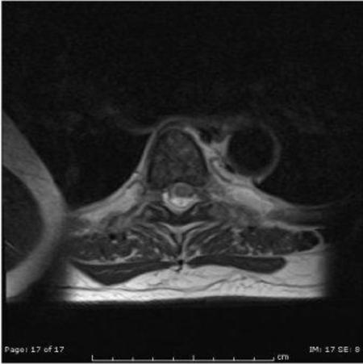
ASusceptibility(0%)
BTruncation(8%)
CAliasing(91%)
DMotion(1%)
Your answerC
Correct answerC. Aliasing
Vital Concept
Aliasing occurs when the field of view (FOV) is too small for the anatomy being imaged. Signals from outside the FOV are then mismapped and wrapped onto the opposite side of the image, due to insufficient data sampling.
Explanation
Aliasing
Aliasing, or wrap-around, is a common MRI artifact that occurs in the phase-encoding direction when the FOV is too small and parts of the body outside the field of view wrap around and get projected over the other side of the FOV. This can be corrected by using a larger FOV, switching the direction of the phase and frequency gradients, using pre-saturation bands on areas outside the FOV, using over-sampling of the areas outside the field of view, or using anti-aliasing software.
Incorrect Answers:
A. Susceptibility artifact occurs secondary to local magnetic field inhomogeneities that can occur secondary to paramagnetic, super-paramagnetic, ferromagnetic or diamagnetic properties. Common examples are loss of signal in tissue next to metallic orthopedic hardware and susceptibility changes on the GRE sequences in cases of brain bleeds. Using fast spin echo sequences instead of GRE sequences will decrease the susceptibility artifact.
B. Truncation or Gibbs artifact refers to a series of lines in the MRI image parallel and adjacent to abrupt and intense changes in the signal intensity. Using a larger matrix and the use of smoothing filters can be used to fix this artifact.
D. Motion or ghosting is secondary to the patient motion or pulsating structures.
Vital Concept: Aliasing occurs when the field of view (FOV) is too small for the anatomy being imaged. Signals from outside the FOV are then mismapped and wrapped onto the opposite side of the image, due to insufficient data sampling.
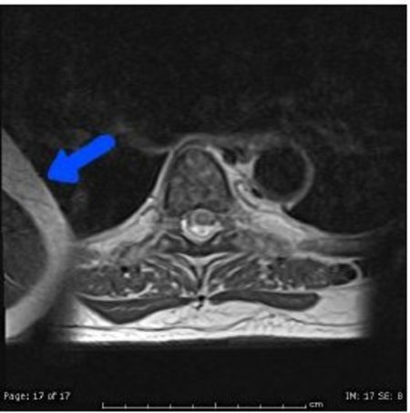
Q3
easy QID 39305
Correct
A patient undergoing a procedure is given an anesthetic regimen that causes them to completely lose consciousness, protective reflexes, and response to painful stimuli. Which of the following anesthetic techniques is most likely being used?
ADeep sedation(5%)
BGeneral anesthesia(94%)
CLocal anesthesia(0%)
DMinimal sedation(0%)
EModerate sedation(1%)
Your answerB
Correct answerB. General anesthesia
Explanation
General anesthesia
General anesthesia provides for a controlled state of unconsciousness in which there is a complete loss of protective reflexes, including the ability to maintain a patent airway and respond to painful stimuli. General anesthesia is usually reserved for major invasive procedures, or if a patient’s pain stimulus makes a procedure too difficult to perform otherwise.
Incorrect Answers:
A. Deep sedation is a drug-induced depression of consciousness, which prevents patients from being easily aroused but allows them to respond following repeated or painful stimulation. Patients may be unable to independently maintain respiratory function. However, cardiovascular function is usually maintained.
C. Local anesthesia is any technique that reduces the sensation of pain in a discrete part of the body. Local anesthesia involves blocking specific nerve pathways in order to induce analgesia for a specific segment of the body. Local anesthesia differs from minimal sedation in the sense that minimal sedation can impair cognitive function and coordination.
D. Minimal sedation involves the administration of medications in order to reduce a patient’s anxiety. Patients under minimal sedation are able to respond to verbal commands. While their cognitive function and coordination may be mildly impaired, patients maintain their respiratory and cardiovascular functions.
E. Moderate sedation involves the administration of medication in order to minimally depress a patient’s level of consciousness. However, the patient retains a continuous and independent ability to maintain protective reflexes, including the ability to maintain a patent airway and respond to painful stimulation.
Q4
moderate QID 48140
Correct
The following radiograph is taken in a patient following the placement of a new pacemaker with a known history of congestive heart failure. Which of the following is the most finding to communicate to the clinician?
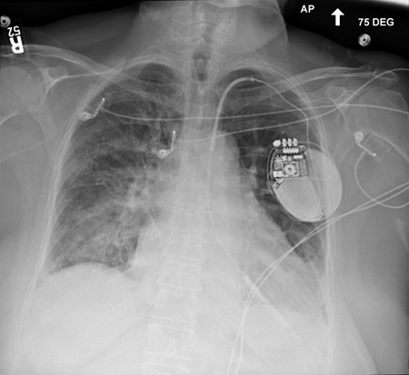
APneumothorax(2%)
BPneumoperitoneum(1%)
CAutomatic implantable cardioverter defibrillator (AICD)/pacemaker in the right heart(9%)
DAutomatic implantable cardioverter defibrillator (AICD)/pacemaker in the left ventricle(80%)
ENo urgent findings(7%)
Your answerD
Correct answerD. Automatic implantable cardioverter defibrillator (AICD)/pacemaker in the left ventricle
Explanation
Automatic implantable cardioverter defibrillator (AICD)/pacemaker in the left ventricle
Explanation:
The radiograph demonstrates a single lead transvenous pacemaker/AICD device with the lead following an arterial, rather than venous, course. It
never
crosses the midline and the tip projects over the expected location of the left ventricle. First and foremost, lines and tubes should always be evaluated on any radiograph, and this finding should be urgently conveyed to the ordering team.
Incorrect Answers:
A. B. There is no pneumothorax or pneumoperitoneum present.
C. If the leads were in the right heart, radiograph should show coronary sinus lead superior to the right ventricular (RV) lead, customarily entering the heart via the SVC along the right side of the upper mediastinum. In this case, the leads enter the heart along the expected course of the aorta, and a different diagnosis is warranted.
E. As discussed above, this
is
an urgent finding.
Q5
easy QID 43617
Correct
Which of the following is the most likely diagnosis in this child with a history of type 1 neurofibromatosis, who presents with visual disturbance?
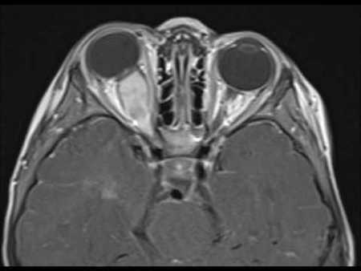
AMeningioma(4%)
BPseudotumor(0%)
COptic glioma(96%)
DLymphoma(0%)
EMetastatic disease(0%)
Your answerC
Correct answerC. Optic glioma
Explanation
Optic glioma
The image shows isointense enlargement of the optic nerve compared to the contralateral side, which on contrast administration will show avid fusiform enhancement. Optic nerve gliomas are relatively uncommon tumors, with a variable clinical course, and often seen in the setting of neurofibromatosis type I (NF1).
Incorrect Answers:
A. Optic nerve meningioma is the primary differential diagnosis in this case. It is a benign mass that is a direct extension from intracranial meningiomas, hence a dural tail can at times be seen. On axial or oblique sagittal imaging, the enhancing tumor surrounding the non-enhancing optic nerve results in the so-called tram-track sign, which is less mass-like than the enhancement present in this case. Appearances on MRI include T1 and T2 relative isointensity to the optic nerve, with homogeneous enhancement. Calcifications are sometime seen. They may be seen with neurofibromatosis type II.
B. Orbital pseudotumor is an idiopathic inflammatory condition that usually involves the extraocular muscles, although in some cases there is involvement of the uvea, sclera, lacrimal gland, and retrobulbar soft tissues. It is not often seen in the pediatric population, with a mean presentation in the 5th decade.
D. Orbital lymphoma is typically seen in patients between 50 and 70 years of age. It usually appears as a soft tissue mass, either involving the conjunctiva or elsewhere in the orbit, frequently in the upper outer quadrant, closely associated with the lacrimal gland.
E. The orbit is an infrequently involved site of metastatic disease, most often seen with cases of breast and lung cancer. Frequently, multiple sites of metastases are involved, and there is a known history of primary malignancy.
Q6
moderate QID 4987
Correct
Based on the provided radiograph, which of the following is the most likely diagnosis?
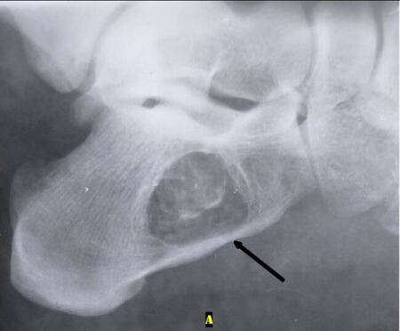
ASolitary bone cyst(9%)
BFibrous dysplasia(1%)
CIntraosseous lipoma(89%)
DCalcaneal pseudocyst(1%)
EOsteomyelitis(0%)
Your answerC
Correct answerC. Intraosseous lipoma
Vital Concept
Intraosseous lipoma of the calcaneus appears as a well-defined lucent lesion with sclerotic borders on plain radiographs. Appearance varies from purely lucent to mixed lucent-sclerotic with calcifications depending on degree of fat necrosis.
Explanation
Intraosseous lipoma
The radiograph shows a lucency with central calcification in the anterior-inferior calcaneus. While certainly many other lucent bone lesions can appear in this location, the overwhelming majority are calcaneal pseudocysts, solitary bone cysts, or intraosseous lipomas. When present, the central calcification is highly suggestive of an intraosseous lipoma and is thought to represent chronically infarcted adipose tissue.
Incorrect Answers:
A. A solitary bone cyst would not be expected to have the central calcification, and this is not the appearance of the "fallen fragment."
B. Fibrous dysplasia is unusual in this location, and the appearance is also atypical of fibrous dysplasia.
D. The central calcification argues against a calcaneal pseudocyst.
E. While Brodie abscess is in the differential for a lucent lesion with a sequestrum, the appearance and location are typical for an intraosseous lipoma.
Vital Concept: Intraosseous lipoma of the calcaneus appears as a well-defined lucent lesion with sclerotic borders on plain radiographs. Appearance varies from purely lucent to mixed lucent-sclerotic with calcifications depending on degree of fat necrosis.
Q7
moderate QID 48472
Correct
A 43 year-old female patient presents with a remote history of MVC with persistent lower extremity pain and parasthesias. Which of the following is most likely true?
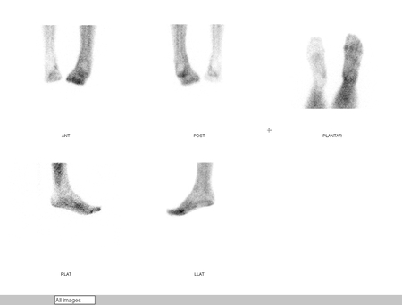
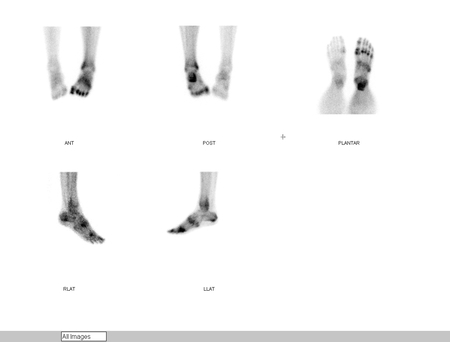
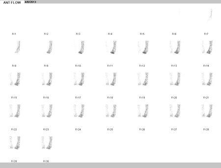
ADisuse is the most likely cause(9%)
BThis disease process is usually unilateral(89%)
CThis is usually asymptomatic(1%)
DFindings consistent with osteoarthritis(2%)
Your answerB
Correct answerB. This disease process is usually unilateral
Vital Concept
Complex regional pain syndrome on three-phase bone scan typically shows increased flow, increased blood pool, and characteristic periarticular uptake in small joints of the affected extremity, though atypical decreased uptake in all phases can occur in late disease or pediatric cases.
Explanation
This disease process is usually unilateral
Complex regional pain syndrome (CRPS) is usually unilateral, although it can be bilateral in up to 25% of cases.
Incorrect Answers:
A. The cause of CRPS is unknown, but some speculate it is the result of the formation of an abnormal reflex arc in the sympathetic nervous system giving rise to peripheral vascular disturbances.
C. Symptoms include constant and intense limb pain. Increased flow and blood-pool activity throughout the left lower extremity, along with intense joint-centered uptake throughout the left foot on delayed images, indicate complex regional pain syndrome as the most likely diagnosis.
D. Findings more consistent with osteoarthritis include linear tramline or joint line pattern of uptake.
Vital Concept: Complex regional pain syndrome on three-phase bone scan typically shows increased flow, increased blood pool, and characteristic periarticular uptake in small joints of the affected extremity, though atypical decreased uptake in all phases can occur in late disease or pediatric cases.
Q8
moderate QID 22410
Correct
A 62-year-old male patient with history of pancreaticojejunostomy presents with acute upper gastrointestinal bleeding. Angiography is performed. Which of the following is the preferred method of treatment?
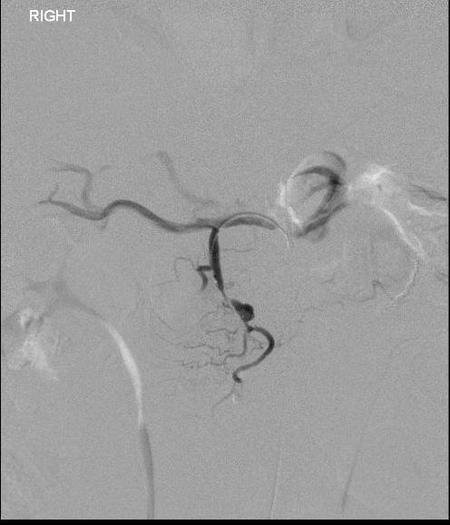
AGelfoam embolization(9%)
BEmbolic spheres(2%)
CBalloon-expandable stent(5%)
DCoil embolization(82%)
ESelf-expanding stent(3%)
Your answerD
Correct answerD. Coil embolization
Vital Concept
Post-pancreaticoduodenectomy pseudoaneurysms can be treated with covered stent-grafts or coil embolization. When the feeding vessel is of small size with multiple branches arising from near the pseudoaneurysm (as in this case), coil embolization is preferred over stenting due to inadequate vessel diameter/landing zones and risk of compromising branch vessels.
Explanation
Coil embolization
The angiographic images demonstrate a pseudoaneurysm in the gastroduodenal artery (GDA - red arrow), which is the most likely source of upper gastrointestinal hemorrhage in this case.
The best treatment for this lesion is microcatheter-delivered coil embolization. Microcatheter-directed coil delivery allows for controlled release of embolic material, which is permanent and has the least risk for non-target embolization.
Incorrect Answers:
A. Gelfoam embolization is a good choice when temporary hemostastis of acute bleeding or preoperative hemostasis is desired. In this case, when the gelfoam hemostasis is resorbed, the patient will likely begin to bleed again.
B. Embolic spheres are better for end-organ embolization such as in the setting of chemoembolization for malignancy. In cases of pseudoaneurysm or aneurysm, these particles would be highly susceptible to migration and non-target embolization in a high-flow setting. Embolic coils are a better choice.
C. E. The involved vessel is too small for the delivery of standard balloon-mounted covered stents. Additionally, there are many nearby branches. Coil embolization is a better choice.
Vital Concept: Post-pancreaticoduodenectomy pseudoaneurysms can be treated with covered stent-grafts or coil embolization. When the feeding vessel is of small size with multiple branches arising from near the pseudoaneurysm (as in this case), coil embolization is preferred over stenting due to inadequate vessel diameter/landing zones and risk of compromising branch vessels.
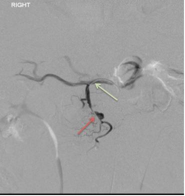
Q9
easy QID 12313
Correct
A 41-year-old male presents with chronic kidney disease (CKD) to their primary care physician. Their past medical history is significant for an unknown psychiatric disorder for which they are on chronic medication. Two images from a retroperitoneal ultrasound are shown below. Both kidneys are normal in transverse measurement. Which of the following is the most likely diagnosis?
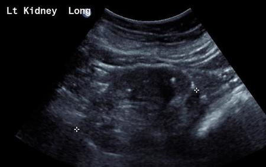
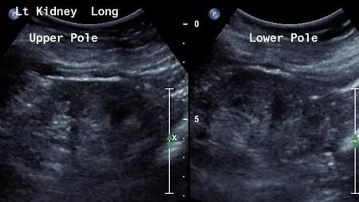
ANephrolithiasis(1%)
BAcquired cystic renal disease(1%)
CLithium-induced nephropathy(98%)
DDominant adult polycystic kidney disease(0%)
Your answerC
Correct answerC. Lithium-induced nephropathy
Vital Concept
Bilateral non-shadowing punctate echogenic foci in chronic lithium users represent lithium-induced microcysts that appear echogenic (not anechoic) due to specular reflections from cysts smaller than ultrasound resolution threshold.
Explanation
Lithium-induced nephropathy
The bilateral multiple non-shadowing echogenic foci are a result of microcysts. These develop in the distal tubules and are a result of direct nephrotoxicity from lithium.
On MRI T2-weighted sequences (not shown here) the microcysts are more apparently visible, as many of them are too small to resolve on ultrasound. This patient had been on lithium for bipolar disorder.
Incorrect Answers:
A. Multiple non-shadowing echogenic foci are seen throughout the renal cortex bilaterally. None of the foci result in hydronephrosis or any other visible renal change. The lack of posterior acoustic shadowing argues against bilateral renal stones as a reasonable diagnosis; in fact, there is posterior acoustic enhancement behind some of these areas of increased echogenicity.
B. End-stage renal disease (ESRD) with patients on dialysis does result in bilateral renal cysts; however, they tend to be macrocysts that are visible on ultrasound rather than the microcysts seen on this exam, which appear as echogenic foci in sonography.
D. One would expect the kidneys to be predominantly replaced with large macrocysts throughout the renal parenchyma with virtually no normal kidney seen; here, multiple echogenic foci are seen, with the overall reniform shape remaining preserved.
Vital Concept: Bilateral non-shadowing punctate echogenic foci in chronic lithium users represent lithium-induced microcysts that appear echogenic (not anechoic) due to specular reflections from cysts smaller than ultrasound resolution threshold.
Q10
hard QID 37605
Incorrect
Which of the following describes moderate contrast reactions?
AUrticaria and pruritis limited to the chest and neck(18%)
BNasal congestion, sneezing, and conjunctivitis(4%)
CWheezing with mild hypoxia(66%)
DFacial edema with dyspnea(12%)
ELaryngeal edema with stridor and hypoxia(1%)
Your answerE
Correct answerC. Wheezing with mild hypoxia
Vital Concept
In moderate contrast reactions, signs and symptoms are pronounced and commonly require medical management. Examples of moderate allergic-like reactions include diffuse urticaria or pruritis, diffuse erythema with stable vital signs, facial edema without dyspnea, throat tightness or hoarseness without dyspnea, and wheezing or bronchospasm with mild or no hypoxia.
Explanation
Wheezing with mild hypoxia
A moderate contrast reaction according to the American College of Radiology guidelines is defined as a clinically evident reaction that is more pronounced than mild reactions but not immediately life-threatening. Typical features include tachycardia or bradycardia, hypotension or hypertension, bronchospasm, wheezing, dyspnea, laryngeal edema, or a pronounced cutaneous reaction. These reactions require immediate treatment and close observation, as they may progress to severe, life-threatening events. The American College of Radiology emphasizes that moderate reactions mandate prompt clinical intervention and careful monitoring for escalation.
Incorrect Answers:
A. B. Examples of mild allergic-like reactions include limited urticaria or pruritis, limited cutaneous edema, limited “itchy” or “scratchy” throat, nasal congestion, and sneezing, conjunctivitis, or rhinorrhea.
D. E. Examples of severe allergic-like reactions include diffuse edema or facial edema with dyspnea, diffuse erythema with hypotension, laryngeal edema with stridor and/or hypoxia, wheezing or bronchospasm with significant hypoxia, and anaphylactic shock (hypotension and tachycardia).
Vital Concept: In moderate contrast reactions, signs and symptoms are pronounced and commonly require medical management. Examples of moderate allergic-like reactions include diffuse urticaria or pruritis, diffuse erythema with stable vital signs, facial edema without dyspnea, throat tightness or hoarseness without dyspnea, and wheezing or bronchospasm with mild or no hypoxia.
Q11
hard QID 20764
Correct
Given the location of the needle in relation to the calcifications on these pre- and post-fire images, which of the following is true regarding the needle in relation to the calcifications on this stereotactic biopsy?
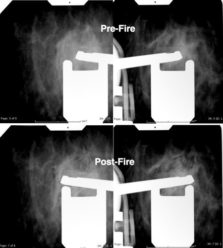
AGood position(5%)
BX-axis error with no Y-axis error(18%)
CY-axis error with no X-axis error(16%)
DCombined X-axis error and Y-axis errors(57%)
Your answerD
Correct answerD. Combined X-axis error and Y-axis errors
Explanation
Combined X-axis error and Y-axis errors
Pre-fire and post-fire -15 degrees and +15 degrees images are acquired during a stereotactic biopsy. There is a combined x-axis error and y-axis error. The probe aperture is to the right of the calcifications post-fire. The post-fire images shown demonstrate a y-axis error due to the fact that in both images the needle is below the lesion.
Incorrect Answers:
A. This is not a good needle position; there is a targeting error.
B. There is a Y-axis error; the needle is below the calcifications
C. The probe aperture is to the right of the calcifications post-fire, consistent with X-axis error.
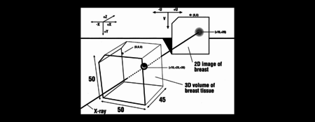
Q12
hard QID 49610
Correct
A 55-year-old female patient involved in a trauma has the following incidental pulmonary computed tomography (CT) findings. The upper abdominal viscera are normal. Lung biopsy has ruled out lymphangioleiomyomatosis. Which of the following statements is true?
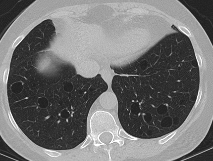
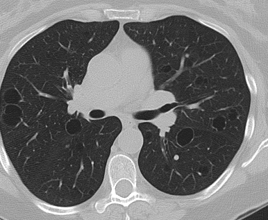
AIdiopathic disease is exceedingly more common than secondary disease in association with a systemic disorder.(29%)
BThe findings are consistent with chronic obstructive pulmonary disease.(1%)
CAir trapping is rare.(7%)
DCysts are typically perivascular.(63%)
Your answerD
Correct answerD. Cysts are typically perivascular.
Vital Concept
Lymphocytic interstitial pneumonia shows lower lung-predominant cysts in autoimmune patients, distinguished from Birt-Hogg-Dubé syndrome by fewer elliptical paramediastinal cysts and from lymphangioleiomyomatosis by non-diffuse distribution.
Explanation
Cysts are typically perivascular.
The CT findings demonstrate perivascular cysts, as multiple vessels are seen coursing along the cyst wall. These multiple thin cysts are typical of lymphoid/lymphocytic interstitial pneumonia.
Incorrect Answers:
A. The idiopathic disease is not as common as secondary disease, such as Sjogren syndrome, HIV, and variable immunodeficiency syndromes.
B. Chronic obstructive pulmonary disease (COPD) computed tomography (CT) findings typically include flattened diaphragm (due to hyperexpansion), decreased peripheral bronchovascular markings, increased lung lucency (parenchymal loss), bulla (round focal lucency over 1 cm), and prominence of the hilar vessels in pulmonary hypertension.
C. Air trapping is common, sometimes producing ground glass opacities.
Vital Concept: Lymphocytic interstitial pneumonia shows lower lung-predominant cysts in autoimmune patients, distinguished from Birt-Hogg-Dubé syndrome by fewer elliptical paramediastinal cysts and from lymphangioleiomyomatosis by non-diffuse distribution.
Q13
easy QID 20786
Correct
This middle-aged male patient complains of pain with overhead activities, which is re-created with forward flexion and slight abduction (positive Neer test). Which of the following tendon is involved in the patient’s symptoms?
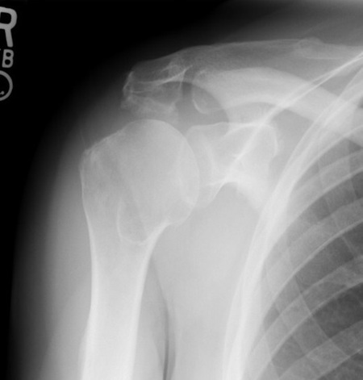
AInfraspinatus(2%)
BSupraspinatus(93%)
CTeres minor(1%)
DShort head of the biceps(2%)
ESubscapularis(2%)
Your answerB
Correct answerB. Supraspinatus
Explanation
Supraspinatus
Frontal radiograph of the right shoulder shows a prominent hooked osteophyte at the acromial undersurface (blue arrow). This predisposes the patient to acromial impingement of the supraspinatus tendon as it passes between the coracoacromial arch and humeral head. The Neer test is a buzzword for acromial shoulder impingement.
Incorrect Answers:
A, C, and E. The other tendons of the rotator cuff are not involved anatomically.
D. The short head of the biceps is anatomically distinct.
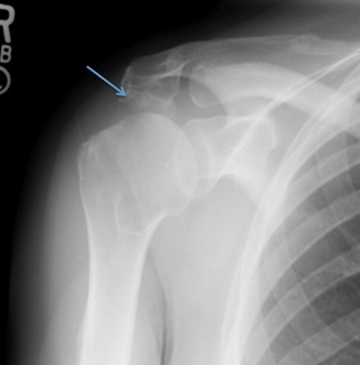
Q14
hard QID 24469
Correct
Which of the following devices is shown?
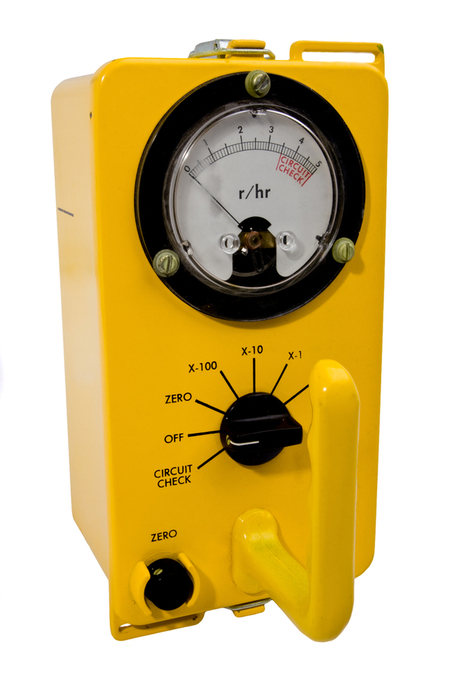
AIonization chamber(75%)
BWell counter(11%)
CGamma camera(1%)
DProportionality chamber(12%)
Your answerA
Correct answerA. Ionization chamber
Vital Concept
Ionization chambers, such as the CD V-715 shown, measure radiation by detecting ions created when radiation interacts with gas between two electrodes, producing current proportional to radiation dose.
Explanation
Ionization chamber
This device is a CD V-715 ionization chamber. It was developed during the Cold War and is intended to detect high-range gamma range (see r/hr as units on dial of the device). This would be in contrast to a geiger counter, which detects much smaller amounts of radiation and would be expected to have units such as counts per unit time or mR/uSv.
Incorrect Answers:
B. Well counters use a sodium iodide crystal detector in order to measure minute amounts of radiation.
C. Gamma cameras are scintillation devices used to detect emitted radiation in order to generate a diagnostic image.
D. Proportionality chambers are devices mainly used in research to measure alpha and beta particle radiation.
Vital Concept: Ionization chambers, such as the CD V-715 shown, measure radiation by detecting ions created when radiation interacts with gas between two electrodes, producing current proportional to radiation dose.
Q15
moderate QID 37554
Correct
A provider is obtaining additional views of a new mass that was called back from screening mammography shown here. Which of the following is the likelihood of malignancy of this lesion?
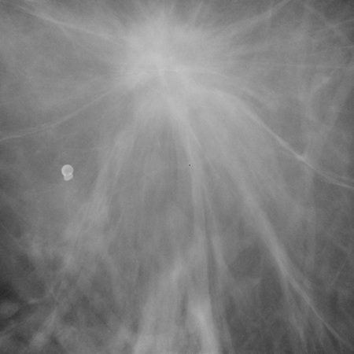
A0%(0%)
BLess than 2%(1%)
C2 to 95%(12%)
DGreater than 95%(86%)
E100%(2%)
Your answerD
Correct answerD. Greater than 95%
Vital Concept
Spiculated margins on mammography have approximately 95% positive predictive value for malignancy, warranting BI-RADS 5 assessment, and immediate core biopsy
Explanation
Greater than 95%
This magnified view shows a spiculated mass. This is a classic finding that is highly suspicious. This should receive a BI-RADS 5 designation, indicating a greater than 95% chance of malignancy.
Incorrect Answers:
A. 0% chance of malignancy is used for a BIRADS category 2 finding. This is one in which the finding is undoubtedly benign, such as vascular or dermal calcifications, or a simple cyst.
B. BIRADS category 3 indicates a less than 2% chance of malignancy. This is used for a finding that is almost certainly benign. Such findings are generally identified on baseline screening or on screening for which previous examinations are unavailable for comparison. Short-interval follow-up is thus recommended to ensure stability.
C. 2 to 95% chance of malignancy is that of a BI-RADS category 4 lesion. This can be further broken down into categories 4A, 4B, and 4C. Category 4A may be used for a finding that requires intervention but has a low suspicion for malignancy. Category 4B includes lesions with a moderate suspicion of malignancy. Category 4C includes findings which are highly suspicious but not classic for malignancy.
E. 100% chance of malignancy is incorrect. This is equivalent to a BI-RADS 6 classification. Although this lesion is almost certainly malignant, it is seen on a diagnostic mammogram and has not yet undergone tissue sampling. Thus, it is not a biopsy-proven malignancy.
Vital Concept: Spiculated margins on mammography have approximately 95% positive predictive value for malignancy, warranting BI-RADS 5 assessment, and immediate core biopsy
Q16
moderate QID 38115
Correct
A 54-year-old female patient with a history of metastatic breast cancer who is currently undergoing chemotherapy has a follow-up bone scan and restaging CT 3 months after therapy. The CT and bone scan images labeled A were obtained before treatment. The CT and bone scan images labeled B were obtained after treatment. Which of the following is the most likely interpretation of the post-treatment bone scan?
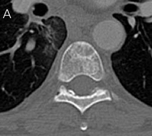
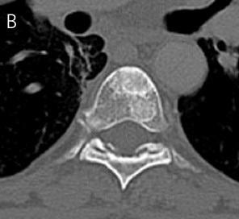
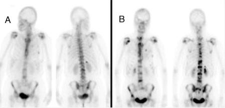
AComplete response(1%)
BPartial response with flare phenomenon(77%)
CProgressive disease(20%)
DStable disease(1%)
EArtifact(1%)
Your answerB
Correct answerB. Partial response with flare phenomenon
Explanation
Partial response with flare phenomenon
Explanation:
Numerous bone metastases are seen on the patient’s prior imaging as multiple foci of tracer uptake on the Tc99m-MDP bone (yellow arrows). The follow-up exam shows increased tracer uptake by these lesions (red arrows). The correlative CT is very useful as it shows that these lesions have changed, with progressive sclerotic fill-in (green arrow) of the previously lytic lesion (blue arrow), which can occur with disease healing. This is known as flare phenomenon or osteoblastic flare phenomenon. On a bone scan there is a spurious increase in radionuclide uptake because of reparative mineralization around healing metastases. The phenomenon is typically seen between 2 weeks to 3 months following therapy, but can rarely be seen as late as 6 months after treatment. It is considered a partial response.
Incorrect Answers:
A. A complete response would show no activity or very low physiological activity.
C. Progressive disease may also have this scintigraphic appearance. This is where the CT is critical, as progressive disease should have a more destructive appearance, not that of progressive healing.
D. Stable diseases would show no significant change.
E. This appearance is not due to artifact, but rather, a real finding with a physiological basis.
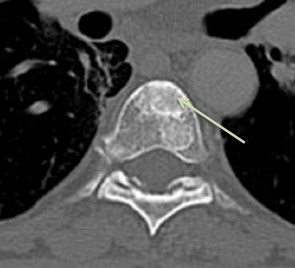
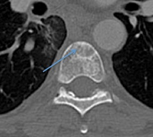
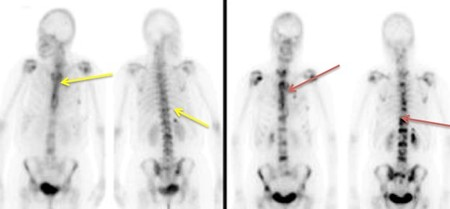
Q17
moderate QID 56256
Correct
A 47-year-old male presents with a history of migraines and a focal neurologic deficit. Which of the following is the diagnosis?
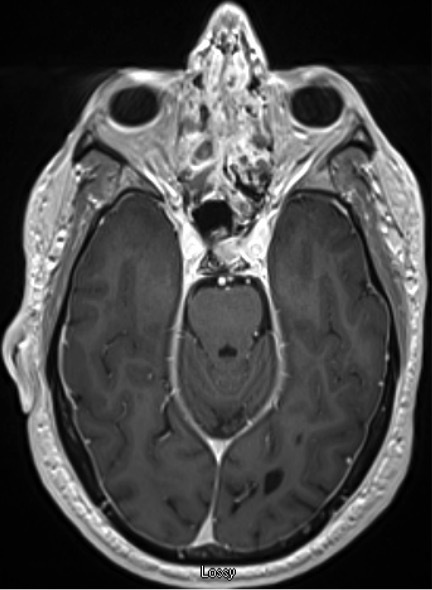
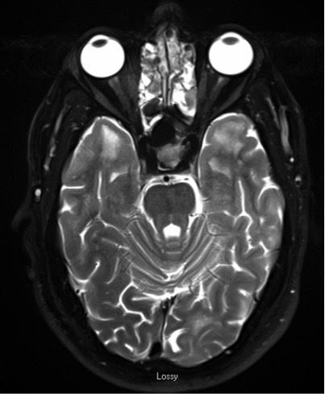
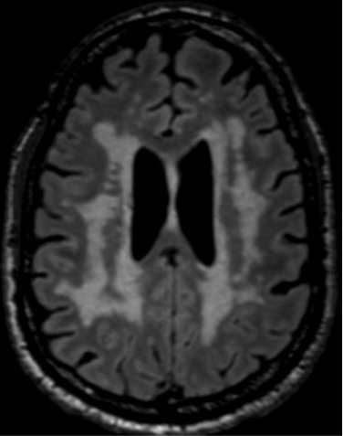
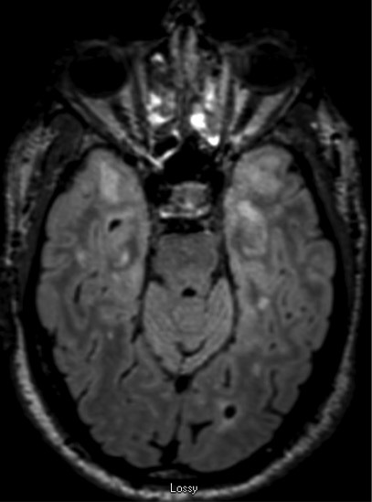
ACerebral autosomal dominant arteriopathy with subcortical infarcts and leukoencephalopathy (CADASIL)(90%)
Correct answerA. Cerebral autosomal dominant arteriopathy with subcortical infarcts and leukoencephalopathy (CADASIL)
Explanation
Cerebral autosomal dominant arteriopathy with subcortical infarcts and leukoencephalopathy (CADASIL)
CADASIL is a hereditary small-vessel disease due to mutations in the NOTCH3 gene on chromosome 19, which causes stroke in young to middle-aged adults. This produces symptoms of migraine and multiple lacunar infarcts at a much younger age than expected and without the presence of more traditional risk factors.
The T2 and T2 FLAIR images demonstrate extensive T2 signal abnormality within the white matter of both cerebral hemispheres. Involvement of the anterior temporal lobes (red arrows) is highly suggestive of the disease. The subcortical u-fibers are spared (yellow arrows). Additionally, there is no associated enhancement in the region of signal abnormality. This case, which has a characteristic appearance by magnetic resonance imaging (MRI), was confirmed with genetic testing.
Incorrect Answers:
B. Pantothenate kinase-associated neurodegeneration (PKAN) was formerly referred to as Hallervorden-Spatz disease. It produces the characteristic “eye of the tiger” sign, with increased T2 signal intensity in the globus pallidus, as well as surrounding susceptibility due to iron deposition. Examinees should be familiar with this entity, although it is rare.
C. Primary CNS lymphoma is a pathology that produces T2 signal abnormality but does not have an appearance that is suggestive of vascular pathology. Additionally, unless there is suppression of enhancement due to treatment, primary CNS lymphoma should demonstrate contrast enhancement.
D. Progressive multifocal leukoencephalopathy (PML) is another pathology that produces T2 white matter signal abnormality and is a very good consideration for these images. However, a characteristic feature of the disease is the involvement of the subcortical u-fibers, which are preserved in this case.
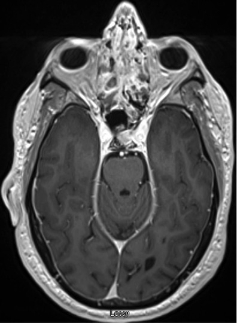
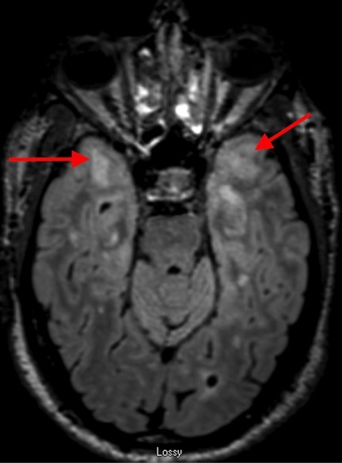
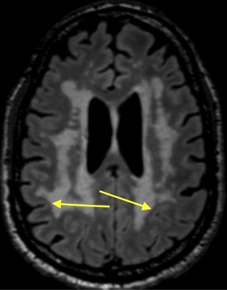
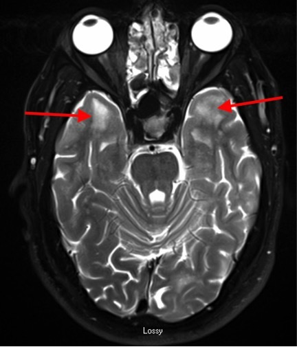
Q18
hard QID 2848
Incorrect
The most likely diagnosis in this patient is associated with which of the following conditions?
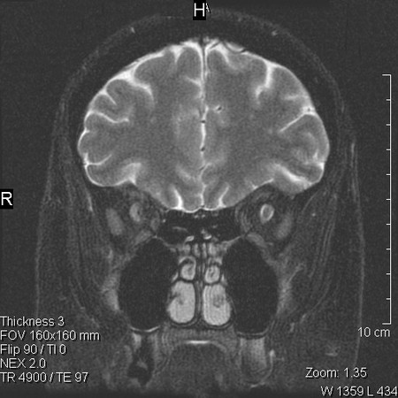
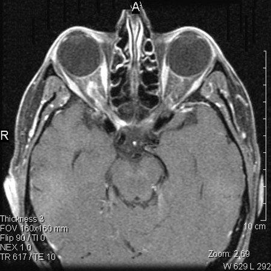
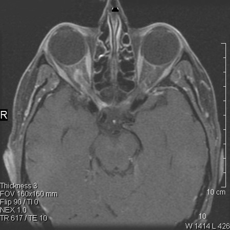
ANeurofibromatosis type 1(51%)
BNeurofibromatosis type 2(47%)
CTuberous sclerosis(1%)
DSturge-Weber(1%)
ECowden syndrome(1%)
Your answerA
Correct answerB. Neurofibromatosis type 2
Vital Concept
Tram track enhancement indicating optic nerve sheath meningioma should prompt evaluation for neurofibromatosis type 2, requiring comprehensive central nervous system surveillance.
Explanation
Neurofibromatosis type 2
Tram track enhancement is pathognomonic for optic nerve sheath meningioma, showing nonenhancing optic nerve sandwiched between enhancing tumor tissue. This finding has strong association with neurofibromatosis type 2, occurring in nearly one-third of cases.
Neurofibromatosis type 2 is characterized by bilateral vestibular schwannomas, multiple meningiomas, and early symptom onset. Patients with optic nerve sheath meningiomas tend to have severe phenotype with multiple central nervous system tumors. This association is similar to the relationship between optic pathway gliomas and neurofibromatosis type 1.
Incorrect Answers:
A. NF type 1 is associated with optic nerve gliomas with maybe pilocytic astrocytomas, and these do not typically have a tram track appearance.
C. Intracranial manifestations of tuberous sclerosis include subependymal nodules, cortical tubers, and subependymal giant cell astrocytoma. Optic meningiomas have no association.
D. Sturge-Weber is not associated with optic meningioma.
E. Cowden syndrome is related to a mutation in the PTEN gene. These patients have Lhermitte Duclos disease or dysplastic cerebellar gangliocytoma, as well as a high coincidence of associated malignancies, particularly thyroid and breast.
Vital Concept: Tram track enhancement indicating optic nerve sheath meningioma should prompt evaluation for neurofibromatosis type 2, requiring comprehensive central nervous system surveillance.
Q19
moderate QID 2891
Correct
A 35-year-old female with a low T4 and T3 was referred for ultrasound of the thyroid gland, and the following images were obtained. Which of the following is the most likely diagnosis?
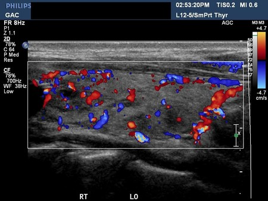
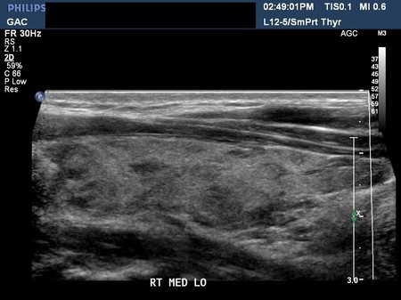
ASubacute granulomatous thyroiditis(11%)
BHashimoto’s thyroiditis(88%)
CInspissated colloid in nodular hyperplasia(1%)
DPapillary thyroid cancer(0%)
Your answerB
Correct answerB. Hashimoto’s thyroiditis
Vital Concept
The micronodular pattern (hypoechoic foci from lymphocytic infiltration) combined with diffuse hypervascularity represents the classic ultrasound appearance of Hashimoto's thyroiditis—simultaneous autoimmune tissue destruction and inflammatory vascular response creating the characteristic heterogeneous, hypervascular thyroid pattern.
Explanation
Hashimoto’s thyroiditis
Chronic autoimmune (Hashimoto's) thyroiditis is diagnosed serologically by detecting autoantibodies to thyroid proteins, especially thyroglobulin. On sonography, the gland is normal or enlarged and hypoechoic. Generally, the normal homogenous echotexture is replaced by a more heterogeneous texture. Thin echogenic fibrous strands may cause a multilobulated or micronodular appearance, and often the gland is extremely hypervascular. Benign and malignant nodules can coexist with Hashimoto's thyroiditis. In the end stage of the disease, the gland becomes atrophic.
Incorrect Answers:
A. Subacute granulomatous thyroiditis (a.k.a. de Quervain's subacute thyroiditis) is believed to be caused by a viral infection, and produces a painful and enlarged thyroid gland, often with a fever. It is often preceded by an upper respiratory tract infection. The entire gland may be involved, or involvement may be focal. Sonography typically shows a poorly marginated area or focal areas of hypoechogenicity in the involved regions of the thyroid, and blood flow to the areas is typically normal or decreased. Although presence or absence of pain was not presented in the history, the several multilobulated or micronodular regions in the images demonstrate vascularity on color Doppler, which argues against this answer choice.
C. Inspissated colloid may occur in nodular hyperplasia and can be confused with microcalcifications; however, no punctate internal echoes are seen in the micronodules demonstrated in this case, making this an incorrect answer choice.
D. Papillary thyroid cancers are typically hypoechoic and entirely solid with microcalcifications owing to the deposition of calcium salts in psammoma bodies. No microcalcifications are seen in these images, and the appearance is most typical of Hashimoto's thyroiditis.
Vital Concept: The micronodular pattern (hypoechoic foci from lymphocytic infiltration) combined with diffuse hypervascularity represents the classic ultrasound appearance of Hashimoto's thyroiditis—simultaneous autoimmune tissue destruction and inflammatory vascular response creating the characteristic heterogeneous, hypervascular thyroid pattern.
Q20
easy QID 37643
Correct
A 54-year-old male with a history of lymphoma undergoes restaging PET CT. Which of the following is the likely diagnosis?
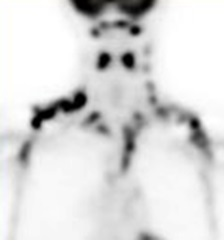
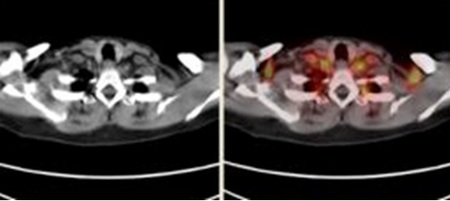
ALymphadenopathy(5%)
BLiposarcoma(0%)
CBrown fat(93%)
DArtifact(0%)
EImproper protocol(1%)
Your answerC
Correct answerC. Brown fat
Explanation
Brown fat
The PET images and fused PET CT demonstrate symmetric increased FDG uptake in the supraclavicular regions, midaxillary line, and paraspinal regions in the posterior mediastinum (red arrows). The correlation on CT is seen as fat (yellow arrows). These are the findings of brown adipose tissue in which there is decoupling of oxidative phosphorylation and the electron transport chain, resulting in futile cycling and generation of heat as a metabolic byproduct instead of ATP. Brown fat is seen most often in pediatric patients and females. Correlation of PET and CT scans allows delineation of normal anatomic structures and precise localization of FDG uptake. Metabolic activity in brown fat can be curbed with sympathetic blockade.
Incorrect Answers:
A. The fused image shows that the FDG activity is in fat, not lymph nodes. Further, adenopathy would not be this symmetric and have such a characteristic, shoulder-girdle-like distribution. However, when brown fat occurs in the mediastinum or in the abdomen, or near lymph nodes or masses, the correct interpretation of focal FDG uptake can result in a real challenge. This is especially true for lymphoma patients who are often young, and where the disease is frequently located in the same regions of common sites of brown fat.
B. Liposarcoma is a malignant tumor of fat. It is FDG avid but would be expected to have a more mass-like and aggressive appearance. Further, it would not appear this symmetric and have such a characteristic, shoulder-girdle-like distribution.
D. No artifact would have this appearance.
E. Improper protocol, for example, failure to have the patient cease muscle activity or scanning, too high a blood glucose level in a non-fasted state, or following insulin administration in a diabetic patient, can cause diffuse and symmetric soft tissue uptake of FDG. This would be in the muscles, not the fat.
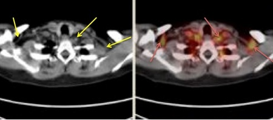
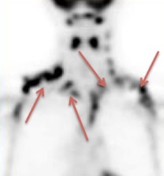
Q21
hard QID 2850
Correct
A 3-year-old male presents with rigidity on physical exam. The following magnetic resonance imaging (MRI) was obtained. Which of the following is the most likely diagnosis?
The FLAIR sequences show symmetric hypointense signal in the globus pallidus (purple arrow) with a region of higher signal in the anteromedial globus pallidus (blue arrow). This has been termed the "eye-of-the-tiger" sign, which is relatively specific for PKAN in a child of this age. It has also been described in older age groups by way of cortical–basal ganglionic degeneration and neuroferritinopathy.
Incorrect Answers:
A. Hypoxic ischemic injury does not result in excess iron accumulation.
B. Wilson's disease can affect the globus pallidus alone; however, the changes are typically normal or increased intensity on T2 for unknown reasons. Edema, gliosis, demyelination, necrosis, and cystic degeneration have been proposed as etiologies.
D. Patients with Williams syndrome classically have decreased brain size and white matter volume loss out of proportion to gray matter, particularly in the posterior cerebrum.
E. Currarino syndrome is manifested by the triad of sacral dysgenesis, presacral teratoma, and anorectal malformations.
Vital Concept: Eye-of-the-tiger sign in a 3-year-old is pathognomonic for PKAN; this is around the earliest age when this characteristic sign develops.
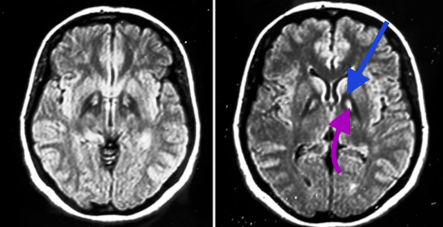
Q22
moderate QID 48138
Correct
A patient presents with murmur and abnormal echocardiogram. Radiographs demonstrate which of the following?
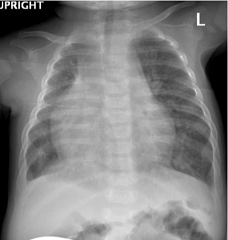
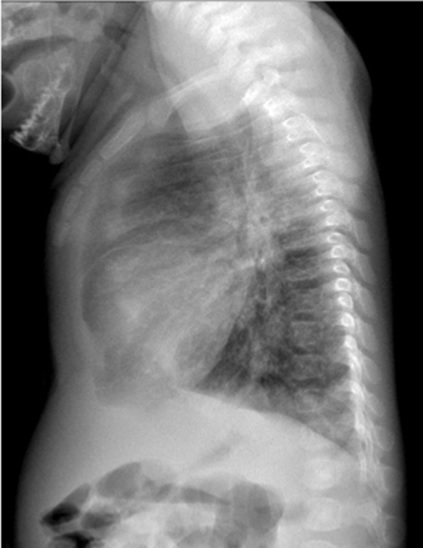
ADextrocardia of the heart(8%)
BLeft lung hypoplasia(2%)
CShunt vascularity(89%)
DForeign body(1%)
Your answerC
Correct answerC. Shunt vascularity
Vital Concept
Hypogenetic lung syndrome (scimitar syndrome) features a hypoplastic right lung with anomalous pulmonary venous drainage to the inferior vena cava, creating the characteristic curved scimitar sign opacity on chest radiography representing the anomalous vein coursing toward the diaphragm.
Explanation
Shunt vascularity
Radiographs demonstrate mediastinal shift to the right from a hypoplastic right lung, and an enlarged vein in the right lower lobe (red arrows) from partial anomalous pulmonary venous return in a patient with scimitar syndrome. This is an example of a left-to-right shunt. Dextroversion of the heart is present, but the apex is still directed toward the left. Newborns can present with congestive heart failure from right-sided volume overload.
Vital Concept: Hypogenetic lung syndrome (scimitar syndrome) features a hypoplastic right lung with anomalous pulmonary venous drainage to the inferior vena cava, creating the characteristic curved scimitar sign opacity on chest radiography representing the anomalous vein coursing toward the diaphragm.
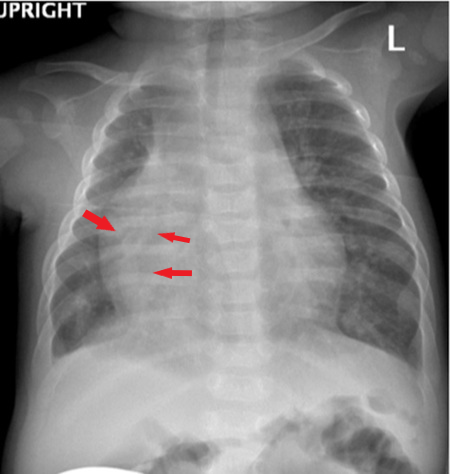
Q23
hard QID 5034
Correct
Which of the following will most likely result from this change?
ASpatial resolution will decrease.(20%)
BThe contrast will increase significantly.(21%)
CThe patient's estimated lifetime cancer risk will be unchanged.(41%)
DLower air kerma at the image receptor will be needed in Mag 2 mode to form the image.(9%)
Your answerC
Correct answerC. The patient's estimated lifetime cancer risk will be unchanged.
Vital Concept
Magnification keeps DAP and stochastic cancer risk unchanged because increased dose rate is offset by proportionally smaller field area, maintaining constant total energy imparted. However, deterministic skin injury risk increases due to higher concentrated dose per unit area.
Explanation
The patient's estimated lifetime cancer risk will be unchanged.
While the radiation output by the tube will be increased by the automatic brightness control (ABC), the area irradiated also decreases. This means an increase in peak skin dose and risk for deterministic effects; however, the dose area product (DAP) will not change much since a smaller area is being irradiated in Mag mode. The risk of stochastic effects is related to the DAP, not peak skin dose. The threshold for deterministic effects is unlikely to be reached during a routine VCUG, so peak skin dose is not particularly important.
MAG modes allow for the magnification of small areas for better visualization. Although a smaller volume of tissue is irradiated in MAG mode, the radiation intensity roughly doubles with each step up in magnification. This assumes preserved collimation to the area of interest.
Incorrect Answers:
A. Spatial resolution will increase as a smaller amount of anatomy is projected onto the same matrix size. While the radiation output by the tube will be increased by the ABC, the area irradiated also decreases. This means an increase in peak skin dose and risk for deterministic effects; however, the dose area product (DAP) will not change much since a smaller area is being irradiated in mag mode.
B. Since ABC increases the radiation output by the tube, scatter also increases, resulting in more noise and diminished contrast.
D. The air kerma at the receptor will initially decrease, but the amount of photon flux needed to form the image remains the same. This results in the ABC increasing the radiation output of the x-ray tube to keep the photon flux constant. This means an increase in peak skin dose and risk for deterministic effects; however, the dose area product (DAP) will not change much since a smaller area is being irradiated in Mag mode.
Vital Concept: Magnification keeps DAP and stochastic cancer risk unchanged because increased dose rate is offset by proportionally smaller field area, maintaining constant total energy imparted. However, deterministic skin injury risk increases due to higher concentrated dose per unit area.
Q24
moderate QID 5052
Correct
Which of the following about radionuclidic purity of 99mTc generator is true?
AMust exceed 95% for pertechnetate(3%)
BCan be evaluated with colorimetry(1%)
CFraction of 99Mo should not exceed 0.15 μCi per mCi of 99mTc at the time of administration(84%)
DFraction of aluminum should not exceed 10 μg per mL of 99mTc(5%)
ERadionuclidic impurity may result in poor image quality(7%)
Your answerC
Correct answerC. Fraction of 99Mo should not exceed 0.15 μCi per mCi of 99mTc at the time of administration
Vital Concept
In the production of Tc99m, radionuclide purity must be demonstrated by showing that the fraction 99Mo does not exceed 0.15 μCi per mCi of 99mTc at time of administration.
Explanation
Fraction of 99Mo should not exceed 0.15 μCi per mCi of 99mTc at the time of administration
The fraction 99Mo should not exceed 0.15 μCi per mCi of 99mTc at time of administration. This must be assessed at the time of the first elution of the day at the minimum. In some agreement states, radionuclidic impurity must be assessed at the time of every elution.
Incorrect Answers:
A. The percentage of pertechnetate or other forms of 99mTc is assessed when determining radiochemical purity, not radionuclidic purity.
B. Colorimetery is used to assess chemical purity and not radionuclidic purity. Radionuclidic purity is assessed with a dose calibrator.
D. This describes chemical purity.
E. Radionuclidic purity is assessed to limit the amount of 99Mo administered to the patient. 99Mo is a beta emitter that increases the dose to the patient, but does not appreciably affect image quality, as beta emissions are not detected by a gamma camera.
Vital Concept: In the production of Tc99m, radionuclide purity must be demonstrated by showing that the fraction 99Mo does not exceed 0.15 μCi per mCi of 99mTc at time of administration.
Q25
easy QID 3014
Correct
A young male patient has a history of pain in the lower left side of the face and mandible. Which of the following statements is true?
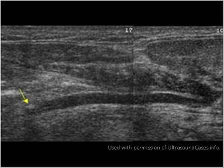
AThis is a case of left submandibular salivary gland mass.(2%)
BThis is a case of left submandibular salivary duct (Wharton duct) calculus.(96%)
CThis is a case of inflammation of the left submandibular salivary gland.(2%)
DThis is a normal study.(1%)
Your answerB
Correct answerB. This is a case of left submandibular salivary duct (Wharton duct) calculus.
Vital Concept
Echogenic focus with posterior shadowing in Wharton's duct plus upstream dilatation indicates sialolithiasis. Per the literature, 70% to 95% of salivary stones occur in the submandibular gland, with 65% showing associated ductal dilatation. The mylohyoid muscle turn is a common impaction site.
Explanation
This is a case of left submandibular salivary duct (Wharton duct) calculus.
Calculus is seen in the left submandibular salivary gland duct (Wharton duct) in its terminal part (arrow). There is significant upstream dilatation of the duct with obstructive changes seen in the left submandibular salivary gland. These findings are most compatible with left submandibular duct stone.
Incorrect Answers:
A. There is no evidence of any mass lesions.
C. There is no evidence of increased vascularity in the submandibular salivary gland.
D. This is not a normal study.
Vital Concept: Echogenic focus with posterior shadowing in Wharton's duct plus upstream dilatation indicates sialolithiasis. Per the literature, 70% to 95% of salivary stones occur in the submandibular gland, with 65% showing associated ductal dilatation. The mylohyoid muscle turn is a common impaction site.
Q26
hard QID 4997
Correct
A 31-year-old male presents with headache and has a head CT. Incidentally, the following abnormality was identified. Which of the following is the appropriate management?
AAntibiotic therapy(1%)
BPercutaneous drainage(1%)
CUltrasound guided fine needle aspiration cytology (FNA)(54%)
DMR followed by surgical excision(33%)
ENo therapy is needed(11%)
Your answerC
Correct answerC. Ultrasound guided fine needle aspiration cytology (FNA)
Vital Concept
US-guided FNA has high specificity for malignancy detection. Detection of malignant cytology is crucial for treatment planning, given increased rates of upfront neck dissection and wider surgical margins in such cases. Core needle biopsy should be performed when FNA is inadequate or nondiagnostic.
Explanation
Ultrasound guided fine needle aspiration cytology (FNA)
The images show a solid mass in the parotid gland. There is a high probability that this could represent a benign mixed tumor (pleomorphic adenoma). Nevertheless, it is appropriate in the work-up of salivary gland tumors to obtain a definitive diagnosis to guide treatment decisions. Ultrasound guided FNA is an appropriate method to gather the appropriate information to make these decisions in the vast majority of cases.
In a patient of this age, surgical excision would most likely eventually be performed once the appropriate clinical information is gathered through ultrasound guided FNA.
There is no indication of infection and antibiotics play no role in treatment. Further, there is no indication of fluid collection or infection, and drainage plays no role in treatment.
Vital Concept: US-guided FNA has high specificity for malignancy detection. Detection of malignant cytology is crucial for treatment planning, given increased rates of upfront neck dissection and wider surgical margins in such cases. Core needle biopsy should be performed when FNA is inadequate or nondiagnostic.
Q27
moderate QID 4954
Correct
A patient with chest pain undergoes cardiac MRI. Two representative long- and short-axis delayed enhancement (DE-MRI) images are shown below, with arrows delineating the abnormality. Based on these images, one might expect which of the following additional clinical findings?
AHistory of recent viral prodrome(83%)
BEKG demonstrating ST elevation in multiple leads(6%)
CAbnormal light chains in the urine(4%)
DHistory of chest pain relieved by sublingual nitroglycerin(1%)
EPetechial hemorrhages in the hands and feet(0%)
Your answerA
Correct answerA. History of recent viral prodrome
Vital Concept
Myocarditis demonstrates characteristic subepicardial or mid-wall late gadolinium enhancement in a non-coronary artery distribution, most commonly affecting the basal inferolateral wall.
Explanation
History of recent viral prodrome
Representative MRI images demonstrate patchy subepicardial delayed enhancement in the inferolateral and apical segments, consistent with acute myocarditis. Myocarditis is most commonly associated with a recent viral infection. Findings in the subacute phase may demonstrate transmural hyperenhancement and edema, which would be more difficult to distinguish from myocardial infarction based on imaging alone.
Incorrect Answers:
B. Such findings would be expected in a patient with acute pericarditis. The abnormal tissue involved in this case is the myocardium, not pericardium.
C. Abnormal urinary light chains can be seen in the setting of amyloid light chain (AL) amyloidosis, which is the most common type of amyloidosis to have cardiac involvement. Cardiac amyloidosis is characterized on MRI by diffuse heterogenous subendocardial delayed enhancement, not seen in this case.
D. Such clinical findings would suggest angina or myocardial infarction. Findings of myocardial infarction on MRI include regional subendocardial or transmural delayed enhancement and myocardial edema in a vascular distribution. The diffuse involvement of the subepicardial tissue would not be consistent with acute MI.
E. This answer suggests an embolic phenomenon, which would be seen in the setting of infective endocarditis. MRI findings are not consistent with this diagnosis. Transesophageal echocardiography (TEE) is utilized to evaluate for valvular vegetations, although large vegetations can be seen on MRI or CTA imaging.
Vital Concept: Myocarditis demonstrates characteristic subepicardial or mid-wall late gadolinium enhancement in a non-coronary artery distribution, most commonly affecting the basal inferolateral wall.
Q28
moderate QID 5083
Correct
Which of the following is the best diagnosis for the radiographic findings pictured?
AJersey finger(1%)
BBoxer’s fracture(1%)
CMallet finger(1%)
DBennett fracture(89%)
ERolando fracture(8%)
Your answerD
Correct answerD. Bennett fracture
Vital Concept
Bennett fracture is a non-comminuted intra-articular fracture of the base of the first metacarpal. Rolando fracture is its comminuted counterpart.
Explanation
Bennett fracture
The radiographs demonstrate a two-piece intra-articular fracture involving the base of the first metacarpal bone with small fragment continuing to be associated with the trapezium, while the other fragment is being pulled downward via the abductor pollicis longus. This constellation of findings is a Bennett fracture, named for Edward Hallaran Bennett, an Irish surgeon. A Bennett fracture is not to be confused with a Bennett lesion, which refers to potentially symptomatic heterotopic bone near the insertion of the inferior glenohumeral ligament, most often seen in baseball pitchers.
Incorrect Answers:
A. The term jersey finger refers to rupture or avulsion of the flexor digitorum profundus secondary to forced hyperextension of a maximally flexed distal interphalangeal (DIP) joint. The term may have arisen from American football players who sustained the injury by clutching an opponent's jersey while the opponent forcefully pulled away. The fourth digit is most commonly involved, and patients present with an inability to flex the affected DIP and with slight extension at rest.
B. The term boxer's fracture refers to a fracture of the distal fourth or fifth metacarpal metadiaphysis with volar angulation of the distal fracture fragment. As the name suggests, these fractures typically result from the direct impact of a closed fist upon a hard object. This entity is common in the setting of a punch injury, and the majority of patients are male, accounting for greater than 90% of cases. The volar angulation of the distal fracture fragment is a product of force from interosseous muscles and imbalance of extrinsic tendons. In cases of severe fracture angulation, open reduction and internal fixation is required to preserve function.
C. The term mallet finger (also known as baseball finger or drop finger) refers to rupture or avulsion of the terminal extensor tendon of a digit. This injury results from forced flexion of an extended DIP joint, as seen when a baseball strikes a fingertip. Patients present with slight distal interphalangeal joint flexion at rest and an inability to extend the joint.
E. The term Rolando fracture refers to a three-part or comminuted, usually Y- or T-shaped, intra-articular fracture-dislocation of the base of thumb (proximal first metacarpal). It can be thought of as a comminuted Bennett fracture. Surgical fixation is generally indicated in Rolando fractures.
Vital Concept: Bennett fracture is a non-comminuted intra-articular fracture of the base of the first metacarpal. Rolando fracture is its comminuted counterpart.
Q29
moderate QID 21583
Correct
A 32-year-old male patient presents with an intractable arrhythmia and undergoes cardiac imaging. Assuming the fossa ovalis is spared, which of the following is the most likely diagnosis?
ACardiac lipoma(12%)
BAtrial myxoma(1%)
CArrhythmogenic right ventricular dysplasia(3%)
DLipomatous hypertrophy of the interatrial septum(84%)
ECardiac sarcoma(0%)
Your answerD
Correct answerD. Lipomatous hypertrophy of the interatrial septum
Explanation
Lipomatous hypertrophy of the interatrial septum
Lipomatous hypertrophy of the interatrial septum is characterized by nonencapsulated fat deposition within the interatrial septum, producing a fatty lesion (blue arrow) that follows fat density on computed tomography (CT) and fat signal on magnetic resonance (MR) sequences (hyperintense on T1WI and hypointense on fat-saturated sequences) and typically spares the area around the fossa ovalis, as given in the question stem. It is characteristically fluorodeoxyglucose (FDG) avid on FDG--positron emission tomography (PET) imaging.
Incorrect Answers:
A. The typical imaging presentation of a cardiac lipoma is an encapsulated mass of adipose tissue which follows fat signals on all sequences. As such, it is characteristically hyperintense on T1WI and hypointense on fat-saturated sequences. They may produce mass effect and result in decreased filling in the affected cardiac chamber. Additionally, they may be arrhythmogenic. The most common locations are the atrial septum, right atrium, and left ventricle. This lesion should be considered if there is involvement of the fossa ovalis.
B. Atrial myxomas often are low-attenuation masses which are frequently attached to the interatrial septum by a thin stalk. They are most commonly located in the left atrium. They are typically highly mobile within the atrium and may prolapse into the mitral valve, producing a ball-valve effect. Occasionally they may have a frond-like appearance. In these cases, they are more likely to result in distal embolic disease, such as stroke.
C. Arrhythmogenic right ventricular dysplasia (ARVD) is an arrhythmia-induced fibrofatty degeneration of the right ventricular wall. Of note, the modified task force criteria do not include MRI detection of fat in the RV wall as a major or minor criterion, as fatty infiltration of the myocardium by MRI has proven problematic. A set of major and minor criteria have been devised to increase specificity of diagnosis. These include family history, depolarization or conduction abnormalities, repolarization abnormalities, arrhythmias, and global or regional dysfunction and structural alterations.
E. Cardiac sarcoma is a relatively rare malignancy that presents as an irregularly-shaped myocardial and/or pericardial mass with irregular enhancement. It should be noted that cardiac metastases are far more common than primary cardiac malignancies, and metastasis should be considered in the setting of cardiac mass, especially in patients with a history of malignancy elsewhere.
Q30
easy QID 37547
Incorrect
A provider is presented with a diagnostic mammography case that was called back from screening mammography. How should the margins of this mass be described?
ACircumscribed(1%)
BIndistinct(3%)
CMicrolobular(0%)
DSpiculated(94%)
EObscured(1%)
Your answerB
Correct answerD. Spiculated
Vital Concept
Spiculated margins on mammography are highly suspicious for malignancy, representing radiating tumor extensions that require immediate recall and tissue sampling as they strongly indicate invasive breast carcinoma.
Explanation
Spiculated
Don’t be distracted by the benign, lucent centered, dermal calcifications (yellow arrows). There is a spiculated mass superimposed (blue arrows), the margins of which are characterized by lines radiating from the margin of a mass. The mass shown below is highly suspicious and would receive a BIRADS 5 characterization. A spiculated margin is characterized by lines radiating from the margin of a mass.
Incorrect Answers:
A. Circumscribed is used to describe a margin that is sharply demarcated (at least 75% of the margin must be well defined, with the remainder no worse than obscured by overlying tissue, for a mass to qualify as "circumscribed") with an abrupt transition between the lesion and the surrounding tissue.
C. Microlobular margins appear as short cycles of the margin which produce small undulations.
E. An obscured margin is one that is hidden by superimposed or adjacent normal tissue. This is used when the interpreting physician believes that the mass is circumscribed, but the margin is hidden. In this case, the superior margin is too indistinct to be called obscured as one would not be able to trace a normal contour.
Vital Concept: Spiculated margins on mammography are highly suspicious for malignancy, representing radiating tumor extensions that require immediate recall and tissue sampling as they strongly indicate invasive breast carcinoma.
Q31
hard QID 50885
Correct
Which one of the following is cyclotron-produced (linear accelerator)?
AIodine-131(15%)
BXenon-133(15%)
CYttrium-90(22%)
DCarbon-11(49%)
Your answerD
Correct answerD. Carbon-11
Vital Concept
Carbon-11 is cyclotron-produced with a 20-minute half-life, requiring chemical laboratories adjacent to cyclotrons for rapid radiopharmaceutical synthesis due to its short decay time.
Explanation
Carbon-11
Irradiation of nuclei with charged particles (i.e., alpha particles, protons, and deuterons) occurs in a cyclotron. This produces isotopes that are neutron deficient. Thus, they decay by either positron emission or electron capture, both of which will increase the N (neutrons) by 1 and decrease the Z (atomic number, proton number) by 1.
This produces a more stable state. Whether or not a radionuclide undergoes one or the other depends on whether there is 1.022MeV of energy available for the nucleus. If this energy is available, it will undergo positron emission. Otherwise, it will undergo electron capture. The following radionuclides undergo positron emission: C-11, N-13, O-15, and F-18. The following radionuclides undergo electron capture: Co-57, Ga-67, In-111, Tl-201, and I-123.
Incorrect Answers:
A. B. C. Iodine-131, xenon-133, and yttrium-90 are not particle accelerator produced radionuclides.
Vital Concept: Carbon-11 is cyclotron-produced with a 20-minute half-life, requiring chemical laboratories adjacent to cyclotrons for rapid radiopharmaceutical synthesis due to its short decay time.
Q32
easy QID 21028
Correct
Images are from a 30-year-old female patient with episodic hypertension. Which of the following is the most relevant laboratory value to confirm the diagnosis?
ASerum ACTH(2%)
BUrine metanephrines(95%)
CSerum aldosterone(3%)
DSerum creatinine(0%)
ESerum renin(0%)
Your answerB
Correct answerB. Urine metanephrines
Explanation
Urine metanephrines
The images demonstrate a heterogeneous mass seen on the T1-weighted image (red arrow), which on T2-weighted images appears heterogeneous, with internal pockets of hemorrhage seen as fluid-fluid levels on the T2-weighted images (green arrows). In the setting of episodic hypertension, pheochromocytoma should be considered. The most important confirmatory laboratory value is 24-hour urine metanephrines. If these are elevated, pheochromocytoma would be the leading diagnosis.
Incorrect Answers:
A. Serum ACTH would be depressed in the setting of a functioning, cortisol-producing adrenal adenoma or adrenal hyperplasia. The patient would present with findings of Cushing syndrome with weight gain, abdominal fat, thin extremities, increased dorsal neck fat (buffalo hump), and moon facies. The patient may also be hypertensive, but the episodic hypertension of pheochromocytoma would be less likely.
C. Serum aldosterone would be elevated in the setting of hyperaldosteronemia (Conn syndrome). This may be seen in the setting of aldosterone-producing adrenal adenoma or adrenal hyperplasia. Increased aldosterone results in hypokalemia and hypertension.
D. Serum creatinine is an important indicator of overall renal function but is not specific to any entity. Elevated serum creatinine suggests decreased renal function.
E. Serum renin may be elevated in many hypertensive syndromes, however, one specific entity that is known to produce elevated renin levels is renovascular hypertension related to renal artery stenosis, in which the juxtaglomerular cells increase their release of renin in response to decreased blood flow.
Q33
easy QID 12296
Correct
What is the primary abnormality on this nonfat-suppressed T1WI of the lumbar spine in this 61-year-old male with lower back pain?
ADisc degeneration(3%)
BBone marrow infiltration(93%)
CMultiple hemangiomas(1%)
DOsteoporosis(2%)
Your answerB
Correct answerB. Bone marrow infiltration
Vital Concept
Normal bone marrow appears hyperintense to skeletal muscle on T1-weighted imaging due to fat content. Bone marrow infiltration appears isointense or hypointense to skeletal muscle on T1 because pathologic processes replace the normal fatty marrow elements. This loss of fat signal is the key finding that distinguishes abnormal from normal marrow on T1-weighted sequences.
Explanation
Bone marrow infiltration
Normally the bone marrow is hyperintense to the discs on the T1WI. In this case, the bone marrow appears hypointense in relation to the discs, which is a sign of a diffuse proliferative disease of the bone marrow. The differential is long and includes multiple myeloma, leukemia, polycythemia rubra vera, diffuse bone metastases, red marrow reconversion in chronic anemia, myelofibrosis, and myelodysplastic syndrome.
Incorrect Answers:
A. Disc degeneration, which refers to the decrease in the water content of the disc, is better evaluated on the T2WI where the normal hyperintense discs (nucleus pulposus) will be of lower intensity than normal or than the adjacent discs.
C. Multiple hemangiomas will give a mottled bone marrow appearance rather than diffuse low intensity as seen in this case.
D. Osteoporosis will give a mottled bone marrow appearance rather than diffuse low intensity as seen in this case.
Vital Concept: Normal bone marrow appears hyperintense to skeletal muscle on T1-weighted imaging due to fat content. Bone marrow infiltration appears isointense or hypointense to skeletal muscle on T1 because pathologic processes replace the normal fatty marrow elements. This loss of fat signal is the key finding that distinguishes abnormal from normal marrow on T1-weighted sequences.
Q34
moderate QID 3041
Correct
This is an incidental finding in the case of a middle-aged female patient with non-specific abdominal discomfort. Which of the following is most likely true in this case based on the ultrasound images below?
AOnly one of the kidneys is involved.(3%)
BThis is a case of metastatic disease.(0%)
CThis is a case of bilateral simple renal cortical cysts.(93%)
DThis is a case of multiple renal calculi.(0%)
Your answerC
Correct answerC. This is a case of bilateral simple renal cortical cysts.
Vital Concept
Simple renal cysts appear as thin-walled anechoic structures with posterior acoustic enhancement on ultrasound. These benign lesions comprise >70% of incidental renal masses.
Explanation
This is a case of bilateral simple renal cortical cysts.
Both kidneys show well-defined smooth-walled, multiple cysts of varying sizes. There are approximately 4 to 5 such cysts in both kidneys. These cysts do not communicate with each other, thus ruling out hydronephrosis.
These benign developmental lesions have the ultrasound features seen here: thin smooth walls, homogeneous anechoic content, and increased through transmission. These findings are most compatible with benign, simple renal cysts.
Incorrect Answers:
A. Both kidneys are involved.
B. There is no evidence to suggest that this is a metastatic disease. These findings appear cystic and are likely benign in nature.
D. There is no evidence of any renal calculi in these images. Both kidneys appear normal in position with no indication of malrotation of the kidneys.
Vital Concept: Simple renal cysts appear as thin-walled anechoic structures with posterior acoustic enhancement on ultrasound. These benign lesions comprise >70% of incidental renal masses.
Q35
hard QID 3089
Incorrect
A 24-year-old male with prior traumatic brain injury and ventriculoperitoneal (VP) shunt placement presents to the emergency department (ED) with increased confusion. A head computed tomography (CT) scan without contrast reveals prominence of the ventricular system, which is grossly unchanged. Neurosurgery is consulted, and a nuclear medicine shunt study is ordered to further evaluate the VP shunt. Progressively delayed planar images of the head, chest, and abdomen are included here. Note that umbilical skin markers are at the skin surface on the lateral images. Assuming that the tracer is still within the thorax at 90 minutes, which of the following is the most likely diagnosis?
ANormal shunt study(6%)
BLoculation around the shunt tip in the abdomen(25%)
CObstructed shunt at the level of the lower thorax(67%)
DCerebrospinal fluid (CSF) leak(1%)
Your answerA
Correct answerC. Obstructed shunt at the level of the lower thorax
Vital Concept
Lower thoracic shunt obstruction shows tracer flowing normally from reservoir but stopping abruptly at thoracic level without reaching peritoneum, indicating mid-shunt mechanical blockage requiring surgical revision of that tubing segment. Tc-99m pertechnetate has come into favor for shunt studies; its shorter half-life is usually sufficient in these cases.
Explanation
Obstructed shunt at the level of the lower thorax
The Indium 111-DTPA shunt study demonstrates radiotracer activity progressing throughout the cerebrospinal fluid (CSF) spaces and shunt tubing within the anterior thorax. No radiotracer activity is seen below the level of the lower chest or within the peritoneal cavity, VP shunt obstruction/malfunction.
Of note, radiotracer activity is noted within the urinary bladder, related to excretion of absorbed radiotracer.
Incorrect Answers:
A. The shunt study demonstrates obstruction.
B. Findings are compatible with shunt obstruction, not loculation. With a loculation at the catheter tip, one would expect to see
radiotracer rapidly enter the abdomen and remain contained within a small space, with no dispersion into the abdomen.
D. There is no evidence of CSF leak. Reflux of radiotracer within the spinal CSF space is related to obstruction of the shunt tubing.
Vital Concept: Lower thoracic shunt obstruction shows tracer flowing normally from reservoir but stopping abruptly at thoracic level without reaching peritoneum, indicating mid-shunt mechanical blockage requiring surgical revision of that tubing segment. Tc-99m pertechnetate has come into favor for shunt studies; its shorter half-life is usually sufficient in these cases.
Q36
hard QID 4966
Incorrect
A patient presents with pain and palpable abnormality in the right groin 1 week after a cardiac catheterization. The patient is to undergo percutaneous ultrasound-guided treatment of the pictured abnormality. The medication principally used for treatment is administered at an approximate dose of:
A20 IU.(4%)
B200 IU.(48%)
C2,000 IU.(25%)
D10,000 IU.(22%)
E100,000 IU.(1%)
Your answerC
Correct answerB. 200 IU.
Explanation
200 IU.
The ultrasound shows an iatrogenic femoral artery pseudoaneurysm. A commonly utilized treatment option is percutaneous ultrasound-guided thrombin injection. No consensus dose is agreed upon in the literature, but 100 to 1000 IU are typical doses used based on the size of the pseudoaneurysm, with a mean dose of approximately 300 IU. Thrombin usually comes as a powder and is dissolved in normal saline, generally at a dose of 1,000 IU/mL.
Incorrect Answers:
A. A dose of 20 IU is too small.
C. A dose of 2,000 IU is high.
D. A dose of 10,000 IU is much too high.
E. A dose of 100,000 IU is much too high.
Q37
easy QID 22594
Correct
An 18-month-old female patient presents with nystagmus and increasing somnolence. Which of the following is the most likely diagnosis?
ABrainstem glioma(0%)
BMedulloblastoma(2%)
CPilocytic astrocytoma(94%)
DCraniopharyngioma(0%)
EPleomorphic xanthoastrocytoma (PXA)(4%)
Your answerC
Correct answerC. Pilocytic astrocytoma
Vital Concept
Pilocytic astrocytoma classically appears as a cystic mass with intensely enhancing mural nodule. Minimal vasogenic edema is present. The solid component is hypointense on T1-weighted and heterogeneous/hyperintense on T2-weighted images.
Explanation
Pilocytic astrocytoma
Pilocytic astrocytomas are WHO grade I tumors that typically present as cystic cerebellar lesions characterized as having the appearance of a cyst (blue arrow) with enhancing mural nodule (red arrow). They may also arise in the optic pathways of patients with neurofibromatosis type 1. On CT, they have a characteristic low-attenuation cystic appearance with peripheral enhancing nodularity. They may also have peripheral calcifications. On MRI, they are typically markedly T2 hyperintense with an enhancing nodular component along their periphery when encountered in the cerebellum. They are most commonly present in children aged 5 to 15 years and grow slowly, producing symptoms as a result of mass effect, and have a good prognosis when completely resected.
Incorrect Answers:
A. Brainstem gliomas are tumors of the pediatric brain. They are a genetically diverse group of tumors primarily found within the pons or medulla and can produce variable imaging appearances based on molecular subtype.
B. Medulloblastoma is a WHO grade IV tumor arising from the superior medullary velum in the roof of the fourth ventricle (in children) and from the cerebellar hemisphere (more lateral, more common in adults). They tend to be spherical in shape and are hyperdense but heterogeneously calcified and hemorrhagic on CT, typically enhancing after administration of contrast. On MRI they are often markedly heterogeneous on T1- and T2-weighted imaging with heterogeneous enhancement and characteristic restricted diffusion. They characteristically spread by subarachnoid seeding and as such, the entire neuroaxis should be imaged prior to surgical resection. They typically present with posterior fossa signs such as ataxia and cranial neuropathies.
D. Craniopharyngiomas are benign WHO grade I tumors arising in the sellar region from remnants of Rathke's pouch epithelium. They are typically large, lobular lesions with internal cystic components and prominent calcifications. The cysts are of variable signal intensity on T1- and T2-weighted imaging, depending on their contents. They typically have marked enhancement, especially at the cyst walls. There are two types: adamantinomatous and papillary. Adamantinomatous type is most common in pediatric populations and demonstrates the typical solid/cystic appearance with internal calcification and hemorrhage. Papillary type is more common in adults and is typically solid with infrequent calcification.
E. Pleomorphic xanthoastrocytoma (PXA) is another of the lesions on the differential diagnosis for a “cyst with enhancing mural nodule” appearance. They are WHO grade II lesions that typically appear as a peripherally located mass within a cerebral hemisphere, most commonly in the temporal lobe. They frequently have the additional finding of an enhancing dural attachment, while the enhancing nodule frequently touches onto the pia. They are a frequent cause of temporal lobe epilepsy and most often appear in the pediatric population. They are frequently treated by surgical resection with favorable prognosis. The infratentorial location of the lesion in this case makes PXA a less likely diagnosis.
Vital Concept: Pilocytic astrocytoma classically appears as a cystic mass with intensely enhancing mural nodule. Minimal vasogenic edema is present. The solid component is hypointense on T1-weighted and heterogeneous/hyperintense on T2-weighted images.
Q38
easy QID 56822
Correct
A patient with previously undiagnosed bilateral neuropathic arthropathy of the shoulders should undergo which of the following imaging tests for further evaluation?
ACT of neck(1%)
BMRI of cervical spine(97%)
CCT of chest(1%)
DMRI of lumbar spine(0%)
Your answerB
Correct answerB. MRI of cervical spine
Explanation
MRI of cervical spine
Bilateral neuropathic arthropathy of the shoulders has been described in the setting of syrinx formation in the cervical spine. Therefore, MRI of the cervical spine is the most appropriate diagnostic test.
Incorrect Answers:
A. CT of the neck would not be expected to demonstrate a cervical spine syrinx. CT of the neck is typically obtained for evaluation of airway narrowing in the emergency setting or evaluation of neck masses.
C. CT of the chest would not be expected to demonstrate any neurologic abnormality related to the upper extremities. CT of the chest is typically obtained for the evaluation of pulmonary and mediastinal abnormalities.
D. MRI of the lumbar spine would not be expected to demonstrate any abnormality related to innervation of the upper extremities. MRI of the lumbar spine is typically obtained for evaluation of back pain and lower extremity radiculopathy.
Q39
easy QID 3076
Correct
Which of the following is true regarding the pertinent finding?
AThe finding is likely malignant.(1%)
BThe abnormality is localized to the left thyroid lobe.(2%)
CThe findings are compatible with a hyperfunctioning nodule.(93%)
DThe findings are compatible with Graves' disease.(4%)
Your answerC
Correct answerC. The findings are compatible with a hyperfunctioning nodule.
Vital Concept
Autonomous functioning nodules appear as solitary hot areas with suppressed background thyroid and have very low malignancy risk, rarely requiring FNA unless ultrasound features are concerning.
Explanation
The findings are compatible with a hyperfunctioning nodule.
There is a hyperfunctioning nodule within the right thyroid lobe demonstrating markedly increased radiopharmaceutical uptake. Uptake in the remainder of the thyroid gland is suppressed. Up to half of these nodules are autonomously functioning, meaning they grow and function without stimulus from thyroid stimulating hormone (TSH).
Incorrect Answers:
A. The overwhelming majority of hyperfunctioning thyroid nodules represent benign adenomas.
B. The pertinent finding is a hyperfunctioning nodule in the right thyroid lobe. Uptake in the left thyroid is diminished.
D. On I-123 scintigraphy, Graves' disease typically appears as an enlarged thyroid gland with diffusely increased radiopharmaceutical uptake.
Vital Concept: Autonomous functioning nodules appear as solitary hot areas with suppressed background thyroid and have very low malignancy risk, rarely requiring FNA unless ultrasound features are concerning.
Q40
moderate QID 3017
Correct
A female patient has a lump in the right side of her neck. Ultrasound images of the thyroid are shown below. Which of the following is the most likely diagnosis?
AHashimoto thyroiditis(7%)
BThyrotoxicosis(4%)
CColloid nodule of the thyroid(5%)
DHemorrhagic cyst of the thyroid(0%)
EFollicular adenoma(83%)
Your answerE
Correct answerE. Follicular adenoma
Vital Concept
Isoechoic appearance with smooth margins favors follicular adenoma over carcinoma. Isoechogenicity is a predictor of benignity, reflecting preserved follicular architecture in adenomas. Hypoechogenicity is more characteristic of follicular carcinoma than adenoma.
Explanation
Follicular adenoma
The mass is isoechoic to the adjacent thyroid, well-defined, and shows a hypoechoic halo around it. It is homogeneous in texture and has a sonographic appearance similar to that of the normal thyroid. Of the given answers, follicular adenoma is most compatible with this appearance.
Incorrect Answers:
A. The mass lesion is well-defined. Hashimoto's thyroiditis usually produces diffuse changes in the thyroid. Hashimoto's may also show nodules with a "giraffe pattern" (light blocks separated by black bands) or uniformly echogenic nodules ("white knight").
B. No evidence of toxicosis is present. Thyrotoxicosis is diffuse and seen as a marked increase in vascularity of the gland.
C. Colloid nodules appear heterogeneous, unlike this case.
D. Hemorrhagic cysts are heterogeneous and cystic in nature.
Vital Concept: Isoechoic appearance with smooth margins favors follicular adenoma over carcinoma. Isoechogenicity is a predictor of benignity, reflecting preserved follicular architecture in adenomas. Hypoechogenicity is more characteristic of follicular carcinoma than adenoma.
Q41
hard QID 2906
Incorrect
Which of the following is true regarding the automatic brightness control (ABC) of a fluoroscopy system?
AIn pediatric patients, adjustments are made primarily to the mA.(12%)
BIn pulsed fluoroscopy mode, the ABC can increase the pulse frequency to maintain constant signal-to-noise ratio (SNR).(14%)
CLower patient doses are achieved by increasing the kVp while decreasing the mA.(60%)
DIf the ABC increases the kVp, higher contrast levels are achieved.(4%)
EThe ABC maintains a constant radiation dose rate.(9%)
Your answerA
Correct answerC. Lower patient doses are achieved by increasing the kVp while decreasing the mA.
Vital Concept
Higher kVp creates more penetrating photons that traverse rather than absorb in patient tissues, requiring fewer total photons (lower mAs) to achieve equivalent detector exposure, resulting in lower overall patient dose through improved beam efficiency.
Explanation
Lower patient doses are achieved by increasing the kVp while decreasing the mA.
In most fluoroscopy systems, the ABC is set up to adjust kVp to a higher degree than mA. This is the reason is that the radiation dose to the patient will decrease at higher kVp and increase at higher mA.
Remember, "dose" in the setting of fluoroscopy is primarily concerned with deterministic effects, mainly skin dose. Increasing kVp produces a higher-energy beam, which is more penetrating. This means less dose to the skin. Increasing mA will significantly increase skin dose. This is an important concept to remember and distinguish from the questions that state "all other variables are kept the same." In that situation, dose would increase as the square with increasing kVp because the mA and exposure time are not reduced.
Incorrect Answers:
A. In the ABC setup, increases in mA will significantly increase patient dose while increases in kVp will decrease patient dose at the expense of decreased contrast. Remember, "dose" in the setting of fluoroscopy is primarily concerned with deterministic effects, mainly skin dose. Increasing kVp produces a higher-energy beam, which is more penetrating. This means less dose to the skin. Increasing mA will significantly increase skin dose. Almost all fluoroscopy ABCs are set up to increase kVp more than mA, especially in pediatric patients where there are large increases in kVp before significant change to mA.
B. In pulsed fluoroscopy mode, the ABC does not control the pulse rate. Pulse rate can be manually adjusted by the operator. The ABC generally adjusts the kVp and mA, as well as the pulse duration in pulsed mode. The ABC can also adjust the aperture once the tube output has reached maximum output.
D. Increasing kVp increases the average and maximum beam energy. At higher energy, there is less photoelectric effect (changes as 1/E^3) and increased Compton scatter (changes as 1/E). The result is increased scatter, which lowers image contrast.
E. The ABC only controls the image exposure, i.e., the amount of radiation flux to the image receptor. The ABC goal will be to maintain constant brightness, not radiation dose. Often, this can mean higher radiation doses and must always be considered when making adjustments.
Vital Concept: Higher kVp creates more penetrating photons that traverse rather than absorb in patient tissues, requiring fewer total photons (lower mAs) to achieve equivalent detector exposure, resulting in lower overall patient dose through improved beam efficiency.
Q42
hard QID 37633
Incorrect
A 47-year-old male is undergoing a thyroid scan because of clinical concern for hyperthyroidism and a palpable thyroid nodule. What is the probability that the finding shown is malignant?
A0%(1%)
B1%(7%)
C5-20%(71%)
D25-40%(5%)
Your answerB
Correct answerC. 5-20%
Vital Concept
Greater than 85–90% of thyroid nodules are cold (hypo-functional) on thyroid scintigraphy. The majority have benign etiologies, such as cysts, colloid nodules, or thyroiditis. Some patients with cold nodules have a malignancy. The incidence of cancer in a cold thyroid nodule ranges from 5-20%, depending on source.
Explanation
5-20%
Thyroid scan (thyroid scintigraphy) is a nuclear medicine examination used to evaluate thyroid tissue. "Hot” nodules are rarely malignant and do not warrant cytologic analysis. A “warm” or iso-functioning nodule with radiotracer uptake equal to that of the surrounding thyroid, or a “cold” or hypofunctioning nodule with radiotracer uptake less than that of the surrounding thyroid, is slightly more suspicious.
The I-123 thyroid scan demonstrates a cold nodule (arrow).
Greater than 85–90% of thyroid nodules are cold (hypofunctional) on thyroid scintigraphy. The majority have benign etiologies, such as cysts, colloid nodules, or thyroiditis. However, a significant subgroup of patients with cold nodules are harboring malignancy. Overall, the incidence of cancer in a cold thyroid nodule is approximately 5-20%, depending on the source. In contrast, the overwhelming majority of hyper-functioning, hot nodules are benign (95-99%).
Incorrect Answers:
A.B.D. As described above, malignancy rate is about 5-20% percent for cold nodules.
Vital Concept: Greater than 85–90% of thyroid nodules are cold (hypo-functional) on thyroid scintigraphy. The majority have benign etiologies, such as cysts, colloid nodules, or thyroiditis. Some patients with cold nodules have a malignancy. The incidence of cancer in a cold thyroid nodule ranges from 5-20%, depending on source.
Q43
hard QID 5046
Correct
Which of the following is true regarding a pregnant female nuclear medicine technologist?
AThe maximum allowable radiation dose to the fetus throughout the duration of the pregnancy is 10 mSv.(2%)
BThe maximum allowable occupational radiation dose to the technologist, not the fetus, throughout the duration of the pregnancy is 5 mSv.(17%)
CIf the fetal dose limit has been exceeded at the time of declaration of the pregnancy, the female technologist must stop working.(6%)
DThe technologist may declare the pregnancy in writing to initiate fetal dose monitoring.(73%)
EThe technologist must wear a lead apron while in the nuclear medicine lab.(2%)
Your answerD
Correct answerD. The technologist may declare the pregnancy in writing to initiate fetal dose monitoring.
Vital Concept
A pregnant worker can voluntarily inform their employer, in writing, of the pregnancy and the estimated date of conception for proper dose monitoring.
Explanation
The technologist may declare the pregnancy in writing to initiate fetal dose monitoring.
A pregnant radiation worker may declare her pregnancy in writing for fetal dose limits to apply. This is not mandated but an individual's choice.
Incorrect Answers:
A. The maximum allowable occupational radiation dose to the fetus in a declared pregnant woman throughout the duration of the pregnancy is 5 mSv.
B. The 5 mSv occupational dose limit of the declared pregnant female applies to the fetus. The yearly occupational dose limit of 50 mSv still applies to a pregnant radiation worker.
C. If the technologist has exceeded the fetal dose limit of 5 mSv or is within 0.5 mSv of exceeding that limit, by the time the woman declares her pregnancy, an additional 0.5 mSv of fetal radiation dose is allowed for the remainder of the pregnancy.
E. There is no legal requirement for the pregnant radiation worker to wear a lead apron while in the nuclear medicine lab.
Vital Concept: A pregnant worker can voluntarily inform their employer, in writing, of the pregnancy and the estimated date of conception for proper dose monitoring.
Q44
hard QID 21562
Incorrect
A 43-year-old female patient undergoes color Doppler ultrasound of the right lower extremity for suspected deep venous thrombosis. Which of the following is the significance of the waveform shown below?
AIndicates normal arterial pulsatility(3%)
BIndicates normal atrial kick(12%)
CIndicates patency of veins more central in the extremity to this location(58%)
EIndicates turbulent flow concerning for stenosis(9%)
Your answerD
Correct answerC. Indicates patency of veins more central in the extremity to this location
Explanation
Indicates patency of veins more central in the extremity to this location
The waveform demonstrates cardiorespiratory variability in venous flow through the imaged region. Normally, venous flow varies with the phase of the cardiac/respiratory cycles, as shown here. The presence of cardiorespiratory variability in the venous waveform depends on the patency of veins central to the imaged venous segment. If there is narrowing, stenosis, or occlusion proximal to the imaged site, cardiorespiratory variability will be dampened. Given its association with more central venous patency, presence of cardiorespiratory variability in the proximal lower extremity veins should be mentioned in the context of ultrasound evaluation for venous thrombus.
Incorrect Answers:
A. The sampled vessel is a venous structure, and as such, arterial pulsatility is not represented in this waveform.
B. A normal atrial “kick” (waveform secondary to contraction of the right atrium) is better verified more centrally, near the right atrium or in the hepatic veins. In the context of ultrasound evaluation for venous thrombus, this waveform appearance is more significant as an indicator of central venous patency, rather than as a verification of normal right arterial function.
D. Venous valves play a role in preventing reversal of flow in lower extremity veins. If the venous valves were not patent, one would expect to see Doppler waveforms that cross the baseline at some point, indicating the reversal of flow due to incompetent venous valves.
E. While turbulent flow may cause increased velocities and irregular waveforms and can be a marker for significant stenosis, there is no indication of turbulent flow based on this waveform.
Q45
moderate QID 18075
Correct
What is the radiation level measurement/detection device shown in the picture?
AIonization detector(78%)
BDose calibrator(3%)
CGeiger-Müller detector(17%)
DWell counter/thyroid uptake probe(2%)
Your answerA
Correct answerA. Ionization detector
Vital Concept
Ionization chambers have a distinctive gas-filled electrode chamber (cylindrical or box-like housing). Geiger-Mueller counters have the characteristic "pancake probe"—a thin, flat, circular detector window for alpha/beta detection.
Explanation
Ionization detector
This is an ionization detector, which is a gas-filled detector that is used for radiation survey. It is less sensitive but more accurate (the rate of ion pairs development is proportional to the radiation being detected) than the Geiger-Müller detector (the rate of ion pairs development is an amplification of factors of 10 of the radiation being detected). Both are relatively inefficient for the detection of x-ray and gamma ray but very efficient in detecting charged particles.
Incorrect Answers:
B. The dose calibrator is another form of a gas-filled detector. It is used to measure the radiopharmaceutical dose before administering it to the patient. It has a well configuration, which improves the geometrical efficiency and hence the accuracy of the measurement.
C. The Geiger-Müller detector with a pancake probe is ideal for low-level radiation detection secondary to the large surface area of the probe. It is another form of a gas-filled detector. It is a very sensitive radiation detector with low specificity and long dead time.
D. The scintillation well counter and thyroid uptake probe are examples of scintillation spectrometers (they are not gas-filled chambers) used in nuclear medicine. The well counter is used to measure the activity concentration of in vitro blood or urine samples. The uptake probe is typically used to measure thyroid uptake of iodine-123 or iodine-131 relative to a calibrated standard capsule.
Vital Concept: Ionization chambers have a distinctive gas-filled electrode chamber (cylindrical or box-like housing). Geiger-Mueller counters have the characteristic "pancake probe"—a thin, flat, circular detector window for alpha/beta detection.
Q46
easy QID 21031
Correct
A 56-year-old male patient presents with acute abdominal pain. Which of the following is the most important characteristic to discuss when considering prognosis/outcome?
ADegree of fat stranding(0%)
BBowel dilatation(0%)
CPseudoaneurysm formation(3%)
DDegree of pancreatic nonenhancement(96%)
ELymphadenopathy(1%)
Your answerD
Correct answerD. Degree of pancreatic nonenhancement
Explanation
Degree of pancreatic nonenhancement
The imaging findings in this case are most consistent with necrotizing pancreatitis. There is diffuse T1 hyperintensity of the pancreatic parenchyma (green arrow) representing blood products, and there are large regions of nonenhancing pancreatic parenchyma (yellow arrows). In cases of acute pancreatitis, the most important prognostic/staging factor is the degree of pancreatic necrosis, as indicated by the amount of nonenhancing pancreatic parenchyma. The more nonenhancing pancreatic parenchyma present, the worse the prognosis is for the patient.
Incorrect Answers:
A. While retroperitoneal fat stranding is usually seen in the setting of acute pancreatitis, the amount of fat stranding is not as important as a prognostic factor.
B. Bowel obstruction and ileus can be a complication of acute pancreatitis. The colon cutoff sign is a famous plain film finding in acute pancreatitis related to colonic ileus and functional obstruction in the setting of adjacent pancreatic inflammation. However, this is not a useful prognostic indicator.
C. Splenic artery pseudoaneurysm is an important complication to be aware of when examining a case of pancreatitis. Rupture of one of these pseudoaneurysms can result in catastrophic hemorrhage, but the presence of a pseudoaneurysm is not in and of itself a prognostic indicator.
E. Prominent lymphadenopathy can be seen in the setting of acute pancreatitis and can serve as a reminder to be sure to re-image the patient after resolution of the acute episode to ensure that there is no underlying malignancy. However, lymphadenopathy itself is not a prognostic indicator of acute pancreatitis.
Q47
moderate QID 44042
Correct
A 34-year-old female patient with pelvic pain undergoes a pelvic ultrasound. Below is an image of the right ovary. Based on the most likely diagnosis, which of the following would one expect to see on MRI?
AA T1 hyperintense, T2 hypointense mass with fluid-fluid levels(11%)
BCircumscribed enhancing mass with low T1 and T2 signal(5%)
CA thickened T2 hypointense junctional zone and associated hyperintense T2 foci(1%)
DA complex circumscribed mass with fat signal(83%)
EAn irregular and heterogeneous mass with ascites, adenopathy, or invasion of adjacent structures(0%)
Your answerD
Correct answerD. A complex circumscribed mass with fat signal
Vital Concept
T1-weighted fat-saturated sequences are essential for mature teratoma diagnosis, demonstrating signal dropout that confirms fat content and distinguishes it from hemorrhage.
Explanation
A complex circumscribed mass with fat signal
The echogenic adnexal mass with dirty shadowing posteriorly represents a mature teratoma (dermoid cyst), where the echogenic component corresponds to the Rokitansky nodule containing sebaceous material, hair, and calcifications. On MRI, this lesion demonstrates characteristic high signal intensity on both T1- and T2-weighted sequences due to the fatty sebaceous material. The diagnostic key lies in the T1-weighted fat-saturated sequence, which shows loss of signal intensity, confirming the presence of macroscopic fat and distinguishing it from hemorrhage, which would remain hyperintense on fat-suppressed images. Calcifications from teeth or bone appear as low signal intensity foci on both T1 and T2 sequences. Enhancement of solid components may occur in benign dermoids and does not necessarily indicate malignancy, as thyroidal tissue or other mature tissues within the teratoma can enhance normally.
Incorrect Answers:
A. A T1 hyperintense, T2 hypointense (T2 shading) mass with fluid-fluid levels are features of an endometrioma, which presents a similar process: ectopic and completely extrauterine endometrial tissue.
B. A circumscribed enhancing mass with low T1 and T2 signal are findings seen in fibroids.
C. A thickened T2 hypointense junctional zone and associated hyperintense T2 foci is the appearance of adenomyosis.
E. An irregular and heterogeneous mass with ascites, adenopathy, or invasion of adjacent structures would favor a diagnosis of uterine leiomyosarcoma.
Vital Concept: T1-weighted fat-saturated sequences are essential for mature teratoma diagnosis, demonstrating signal dropout that confirms fat content and distinguishes it from hemorrhage.
Q48
easy QID 20612
Correct
This 11-year-old child presented with chronic headaches. Which of the following is the most likely diagnosis?
AEpendymoma(2%)
BMeningioma(0%)
CMeningitis(0%)
DChiari I malformation(98%)
EHydrocephalus(0%)
Your answerD
Correct answerD. Chiari I malformation
Explanation
Chiari I malformation
This sagittal image shows displacement of cerebellar tonsil below the upper margin of the foramen magnum, which is a characteristic of Chiari I malformation, the most common variant of the Chiari malformations. Patients most often follow the track of a benign course and typically experience no symptoms or perhaps show chronic, slowly progressive symptoms. Sudden death may occur due to an unexplained pathological mechanism. However, this outcome is very rare.
Chiari 1.5 is often considered progression of the Chiari 1 with caudal descent of the brainstem (typically the obex of the medulla).
Incorrect Answers:
A. Ependymoma most commonly arises in the infratentorial region on the posterior fossa originating from the floor of the fourth ventricle.
B. Meningiomas are most commonly supratentorial and may form in any location in which meninges are located.
C. Meningitis may show enhancement around the meninges on imaging, and patients typically experience stiffness in the neck and headache.
E. Hydrocephalus results from an increase in CSF and would likely show visible enlargement of the ventricles.
Q49
easy QID 2858
Correct
What is the most likely diagnosis?
AOrbital cellulitis(1%)
BIdiopathic orbital inflammatory pseudotumor(5%)
CThyroid eye disease(94%)
DSarcoidosis(1%)
Your answerC
Correct answerC. Thyroid eye disease
Explanation
Thyroid eye disease
The image demonstrates a symmetric enlargement of the medial and inferior extra-ocular muscles as well as the superior rectus muscles. Given the history and this finding, the most likely diagnosis is thyroid ophthalmopathy or thyroid eye disease.
This is an autoimmune orbital inflammatory condition that is associated with thyroid dysfunction, particularly Graves' disease. The most common extra-ocular muscles to be involved in thyroid eye disease are the inferior and medial rectus muscles, and the presentation of painless periorbital edema and proptosis is typical. This being said, 3-5% of patients present with painful symptoms.
Incorrect Answers:
A. Orbital cellulitis is more typically painful.
B. Painful periorbital edema that is unilateral is more typically seen in idiopathic orbital inflammatory pseudotumor.
D. Sarcoidosis could potentially give a similar appearance; however, it is typically more asymmetric and involves other orbital structures as opposed to the bilateral, symmetric enlargement of the medial and inferior rectus muscles.
Q50
QID 56748
Incorrect
Assuming the ROI intensity values are similar on the hyperintense structure, based on the images below, which one of the following is most likely true?
ARight adnexal mass does not contain fat because it does not become hypointense on opposed-phase imaging.(23%)
BOvarian teratomas are characteristically bright on both in-phase and out-of-phase imaging.(57%)
CMicroscopic fat lies within right adnexal mass.(19%)
DRight adnexal mass is most likely metastasis.(1%)
Your answerA
Correct answerB. Ovarian teratomas are characteristically bright on both in-phase and out-of-phase imaging.
Explanation
Ovarian teratomas are characteristically bright on both in-phase and out-of-phase imaging.
Ovarian teratomas are characteristically bright on both in-phase and out-of-phase imaging. The first MRI image is a T1 out-of-phase, and the second MRI image is a T1 in-phase (via chemical-shift imaging). When a voxel contains both fat and water, it will be bright on the in-phase and dark on the out-of-phase.
To see signal dropout on the out-of-phase image, a voxel must contain both fat and water. When the two sets of images are compared, tissue that shows a loss of signal intensity on out-of-phase images is said to contain intracytoplasmic lipid (also referred to as microscopic fat). If the voxel contains no fat or all fat, there will be no decrease in signal intensity.
Incorrect Answers:
A. This adnexal mass has macroscopic fat (hyperintense on both out-of-phase and in-phase images). This lesion is isointense to the subcutaneous fat on the provided images.
C. This mass does not drop out on the opposed-phase imaging, which is consistent with macroscopic fat. Signal dropout would be indicative of intracellular lipid intermixed with water.
D. The identification of macroscopic fat in an adnexal mass places ovarian teratoma at the top of the differential. Statistically this lesion would be the most likely etiology.